Scientific reproducibility: What is it for?
Overview
Teaching: 15 min
Exercises: 5 minQuestions
What is reproducible research?
How can RStudio help research to be more reproducible?
What are the benefits of using RStudio for writing academic essays and papers?
Objectives
Understand what scientific reproducibility entails.
Identify the benefits of using RStudio to create research reports.
Understand how RStudio supports Open Science principles.
Learn how RStudio can help one’s research.
Warm-up
Let’s discuss: What is reproducible research for you? Have you ever experienced issues while trying to reproduce someone else’s study or even your own research?
Reproducible studies allow other researchers to perform the same processes and analyses to produce an identical result as the first initial researcher. Original researchers have to make available the study’s associated data, documentation, and code pipelines and workflows in a way that is sufficiently self-explanatory and well-documented so that independent investigators can reproduce/recreate the original study under the same conditions, using identical materials and procedures, and ultimately achieve consistent results and render equal outcomes. Original investigators, therefore, must produce rich and detailed documentation for themselves and others. This includes fully specifying both in human-readable and computer-executable ways all steps taken in the study.
The importance of Reproducibility in Research
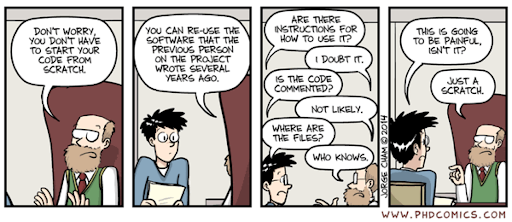
Source: Comic number 1869 from PhD Comics Copyrighted artwork by Jorge Cham.
Discussion: A scary anecdote
- A group of researchers obtain great results and submit their work to a high-profile journal.
- Reviewers ask for new figures and additional analysis.
- The researchers start working on revisions and generate modified figures, but find inconsistencies with old figures.
- The researchers can’t find some of the data they used to generate the original results, and can’t figure out which parameters they used when running their analyses.
- The manuscript is still languishing in the drawer…
According to the U.S. National Science Foundation (NSF) subcommittee on replicability in science (2015):
Science should routinely evaluate the reproducibility of findings that enjoy a prominent role in the published literature. To make reproduction possible, efficient, and informative, researchers should sufficiently document the details of the procedures used to collect data, to convert observations into analyzable data, and to perform data analysis.
Reproducibility refers to the ability of a researcher to duplicate the results of a prior study using the same materials as were used by the original investigator. That is, a second researcher might use the same raw data to build the same analysis files and implement the same statistical analysis in an attempt to yield the same results. Reproducibility is a minimum necessary condition for a finding to be considered rigorous, believable and informative.
Why all the talk about reproducible research?
Many studies claim results that cannot be reproduced. This problem has attracted increased attention in recent years, with supporting evidence that research is often not reproducible. A 2016 survey in Nature revealed that irreproducible experiments are a problem across all domains of science:

Source: Baker, M. 1,500 scientists lift the lid on reproducibility. Nature 533, 452–454 (2016). doi.org/10.1038/533452a
Factors behind irreproducible research

Source: Then a Miracle Occurs. Copyrighted artwork by Sydney Harris Inc.
- Not enough documentation on how experiment is conducted and data is generated
- Data used to generate original results unavailable
- Software used to generate original results unavailable
- Difficult to recreate software environment (libraries, versions) used to generate original results
- Difficult to rerun the computational steps
Reproducible, replicable, robust, generalizable
While reproducibility is the minimum requirement and can be solved with “good enough” computational practices, replicability/robustness/generalizability of scientific findings are an even greater concern involving research misconduct, questionable research practices (p-hacking, HARKing, cherry-picking), sloppy methods, and other conscious and unconscious biases.
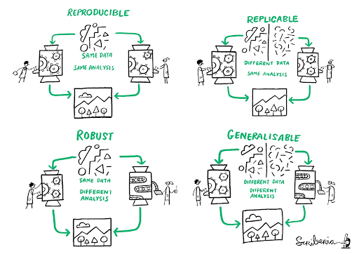
Source: This image was created by Scriberia for The Turing Way community DOI: 10.5281/zenodo.3 332807
If contributing to science and other researchers seems not to be compelling enough, here are 5 selfish reasons to work reproducibly according to Markowetz (2015):
- Helps to avoid data loss and disaster
- Makes it easier to write papers
- Helps reviewers see it your way
- Enables continuity of your work
- Helps to build your reputation
When do you need to worry about reproducibility?
Let’s assume that I have convinced you that reproducibility and transparency are in your own best interest. Then what is the best time to worry about it?
From day one, and throughout the whole research life cycle! Before you start the project because you might have to learn tools like R or Git. While you do the analysis because if you wait too long you might lose a lot of time trying to remember what you did two months ago. When you write the paper because you want your numbers, tables, and figures to be up-to-date. When you co-author a paper, because you want to make sure that the analyses presented in a paper with your name on are sound. When you review a paper, because you can’t judge the results if you don’t know how the authors got there.
Alexander (2022) suggests three steps towards better reproducibility:
1) Ensure the entire workflow is documented. This may involve addressing questions such as:
- How was the raw dataset obtained and is access likely to be persistent and available to others?
- What specific steps are being taken to transform the raw data in the data that were analyzed, and how can this be made available to others?
- What analysis has been done, which codes/scripts were used and how clearly can this be shared?
- How has the final paper or report been built and to what extent can others follow that process themselves?
2) Try to accomplish progressively with the following requirements:
- Can you run your entire workflow again?
- Can another person run your entire workflow again?
- Can “future-you” run your entire workflow again?
- Can “future-another-person” run your entire workflow again?
3) Include a discussion about the limitations of the dataset, methods and workflows in the final paper or report.
Levels of Reproducibility
A published article is like the top of a pyramid, meaning that a reproducible paper/report rests on multiple levels that each contributes to its reproducibility.
Advantages of using RStudio for your project
Understanding foundational aspects of RStudio enables a gradual improvement of scientific workflows and therefore, contributes to increasing research reproducibility compliance. RStudio is an integrated development environment (IDE) for R and Python. It includes a console, syntax-highlighting editor that supports direct code execution, as well as tools for plotting, history, debugging, collaboration, and workspace management. It is a powerful tool which supports research by weaving the principles of reproducibility throughout the entire research lifecycle, from data gathering to the statistical analysis, presentation and publication of results.
RStudio is soon becoming Posit, but that won’t change how you interact with the interface and its functionalities. This name change is only a re-branding to better represent the broader focus and larger community that the IDE serves, which is no longer exclusively linked to R.
It is free and open-source
Reproducibility becomes more difficult and opaque when results rely on proprietary software. Unless research code is open sourced, reproducing results on different software/hardware configurations is impossible. Rstudio is dedicated to sustainable investment in free and open-source software for data science.
It is designed to make it easy to write and reuse code
As soon as you create a new script, the windows/panes within your RStudio session adjust automatically so you can see both your script and the results in your console when you run your syntax. It also offers the ability to call up potential syntax options while you are writing just by using the tab key.
Makes it convenient to view and interact with the objects stored in your environment
RStudio has a very useful “Environment” window available which shows all of the objects that you have stored, including data; scalars, vectors, and matrices; model outputs; etc., along with a summary of the information that is stored in those objects.
Makes it easy to set your working directory and access files on your computer
With RStudio, you can navigate to folders on your computer in the “Files” window, view any files you have in that folder, and set that folder as the working directory.
Integrates with collaboration and publishing tools
Another great advantage of using RStudio for your R project is that the platform integrates with GitHub. Once you connect RStudio with your GitHub account a remote repo becomes the “upstream” remote for your local repo. In essence, it enables you to push and pull commits to GitHub, allowing more seamless collaboration and more effective version control. RStudio also connects with Rpubs and Quarto Pub for easy R project web publishing.
Creates documents using Quarto
As seen, reproducibility implies sharing data, code, and workflows to produce the analysis and compute results. While writing scientific reports one may choose RStudio IDE to marry all these pieces together and take advantage of various tools it integrates with. Having a publication while minimizing reproducibility friction can be accomplished with Quarto. Quarto is a multi-language, next-generation version of R Markdown from RStudio. It includes new features and capabilities while at the same being able to render most existing Rmd files without any modification. With Quarto you can:
- Create dynamic content with Rstudio/R, Python, Julia, and Observable.
- Author documents as plain text markdown or Jupyter notebooks.
- Publish high-quality articles, reports, presentations, websites, blogs, and books in HTML, PDF, MS Word, ePub, and more.
- Author with scientific markdown, including equations, citations, crossrefs, figure panels, callouts, advanced layout, and more.
Quarto generates a .qmd file that weaves together content and executable code into a elegantly formatted output which can be published in various formats. It is a convenient tool for reproducible and dynamic reports which will help you:
- Keep an eye on text (the paper) AND the source code. These computational steps are essential to ensure computational reproducibility.
- Conduct the entire analysis pipeline in a Quarto document: data (pre-)processing, analysis, outputs, visualization.
- Apply a formatting syntax that is part of the R ecosystem and supports LaTeX.
- Combine text written in markdown and source code written in R (and other languages).
- Easily share documents with colleagues, as supplemental material, or as the paper under review.
- Get figures automatically updated if you change the underlying parameters in the code. The error-prone task of exporting figures and uploading the right figure version to another platform is thus not needed anymore.
- Since it uses a text-based format, you can also use versioning control with Git.
- If you do not make any changes to the document after creating the output document, you can be sure that the paper was executable at least at the time of submission.
- Refer to the corresponding code lines in the methodology section making it unnecessary to use pseudocode, high-level textual descriptions, or just too many words to describe the computational analysis.
Why it is called Quarto?
Developers picked a name that had meaning in the history of publishing and landed on Quarto, which is the format of a book or pamphlet produced from full sheets printed with eight pages of text, four to a side, then folded twice to produce four leaves.
Why Quarto and not R Markdown?
As noted before, Quarto is the next generation of R Markdown which was the subject of a previous workshop see Reproducible Publications with RStudio; and, the anatomy of
.rmdand.qmdfiles are very similar. So why move to Quarto? While compatible with Python (and bash, Julia, C, SQL), R Markdown was designed primarily for R users. Quarto does not require R. Quarto runs computations into separate pluggable language “engine”, which helps make this cross language functionality easier to support and reduces infrastrucutre intensivity with built-in applications. In addition, because Quarto is designed to be compatible with existing formats you can render most existing.Rmdand Jupyter Notebooks with Quarto without modification. This low-pain process helps the transition to Quarto.
Some Real-world Applications
Finally, three real-world examples that motivated the authors of this lesson to value and use Quarto:
-
You can publish books! Telling Stories with Data is a great example developed in Quarto. Quarto books can be published to a wide variety of destinations including GitHub Pages, Netlify, RStudio Connect, or any other static hosting service or intranet web server. Learn more.
-
Imagine you want to create a short document that includes some math formulas. The LaTeX document preparation can be used for this, but it can be difficult and a overkill for just a few formulas in otherwise plain text. As we will learn, through Pandoc, Quarto lets you use just the best part of LaTeX—math formatting—while letting you write your text in a user-friendly way. The editor will automatically recognize the syntax and treat the equation as math.
-
In a past version of this workshop we struggled with a scientific paper published in a reputable journal. In trying to recreate the plots the original authors created, we found it difficult and time-consuming to figure out exactly how the authors created their plots. Out of the many columns in their data, many with similar-sounding names, which did they use? How did they handle missing data? Exactly what operations did they perform to compute aggregate values? How much easier it would have been if they had published the code they used along with their paper. RStudio and Quarto allow you to do this.
A Note About the Workshop Example
Our goal is that by the end of this workshop you will be able to create a reproducible report using data and code we will provide. Throughout this workshop, we will be using a shorter and adapted version of the data paper:
Nitsch, F. J., Sellitto, M., & Kalenscher, T. (2021). Trier social stress test and food-choice: Behavioral, self-report & hormonal data. Data in brief, 37, 107245. https://doi.org/10.1016/j.dib.2021.107245.
We will be also using a simplified version of the project directory containing data files and scripts published by the authors on Open Science Framework: https://doi.org/10.17605/OSF.IO/6MVQ7.
The adapted paper template and project directory are used exclusively for instruction purposes with permission from the authors.
Key Points
Reproducible research is key for scientific advancement.
RStudio can help you to organize, have better control over and produce reproducible research.
Navigating RStudio and Quarto Documents
Overview
Teaching: 20 min
Exercises: 10 minQuestions
How do you find your way around RStudio?
How do you start an Quarto document in Rstudio?
How is an Quarto document configured and how do I work with it?
Objectives
Understand key functions in Rstudio.
Learn about the structure of a Quarto file.
Understand the workflow of an Quarto file.
Getting Around RStudio
Throughout this lesson, we’re going to teach you some of the fundamentals of using Quarto as part of your RStudio workflow.
We’ll be using RStudio: a free, open source R Integrated Development Environment (IDE). It provides a built in editor, works on all platforms (including on servers) and provides many advantages such as integration with version control and project management.
This lesson assumes you already have a basic understanding of R and RStudio but we will do a brief tour of the IDE, review R projects and the best practices for organizing your work, and how to install or check packages you need to follow along.
Now, let’s open RStudio. If you are using your local RStudio, make sure you use IDE version RStudio v2022.07.1 or later and that it is running Quarto version 1.2 or above. If you need to check that, for RStudio, choose Help and About RStudio. For the Quarto version checking, type in packageVersion("quarto") on the console.
Basic layout
When you first open RStudio, you will be greeted by three panels:
- The interactive R console/Terminal (entire left)
- Environment/History/Connections (tabbed in upper right)
- Files/Plots/Packages/Help/Viewer (tabbed in lower right)
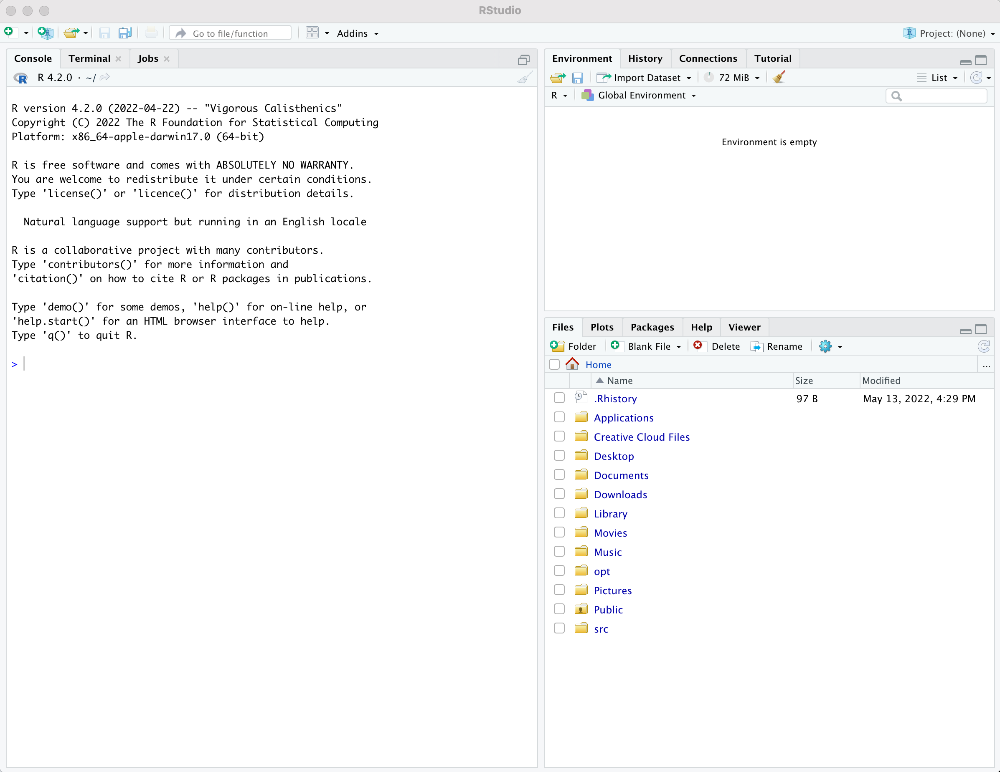
Once you open files, such as .qmd, .rmd or .R files, an editor panel will also open in the top left.
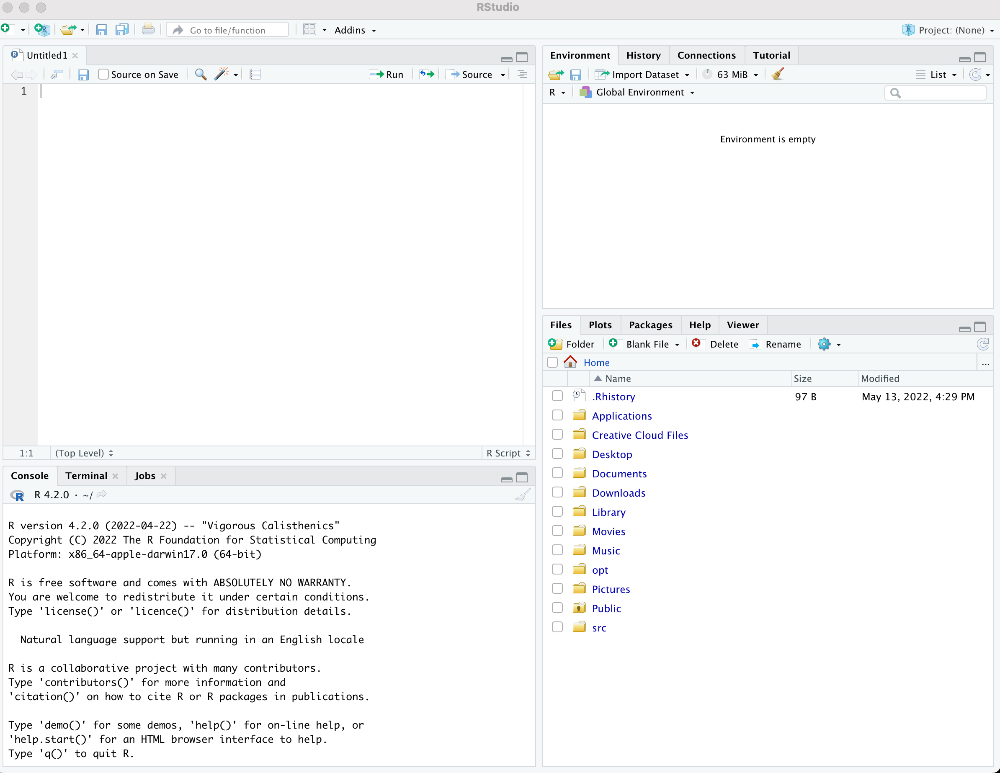
R Packages
Packages are the fundamental units of reproducible R code. They include reusable R functions, the documentation that describes how to use them, and sample data. They are collections of R functions, data, and compiled code in a well-defined format. The directory where packages are stored is called the library. It is possible to add functions to R by writing a package, or by obtaining a package written by someone else. As of this writing, there are over 10,000 packages available on CRAN (the comprehensive R archive network). R and RStudio have functionality for managing packages:
- You can install packages by typing
install.packages("packagename"), wherepackagenameis the package name, in quotes. - You can see what packages are installed by typing
installed.packages() - You can update installed packages by typing
update.packages() - You can remove a package with
remove.packages("packagename") - You can make a package available for use with
library(packagename)
Packages can also be viewed, loaded, and detached in the Packages tab of the lower right panel in RStudio. Clicking on this tab will display all of installed packages with a checkbox next to them. If the box next to a package name is checked, the package is loaded and if it is empty, the package is not loaded. Click an empty box to load that package and click a checked box to detach that package.
Packages can be installed and updated from the Package tab with the Install and
Update buttons at the top of the tab. We have asked you to install a few packages prior to the workshop following the setup instructions using the install.packages() command. Let’s now make sure you have all of them good to go.
CHALLENGE 2.1 - Checking for Installed Packages
Which command would you use to check for packages ready for use?
SOLUTION
To see what packages are installed, use the
installed.packages()command. This will return a matrix with a row for each package that has been installed.
Starting and Naming a New Quarto Document
Start a new Quarto document in RStudio by clicking File > New File > Quarto Document…
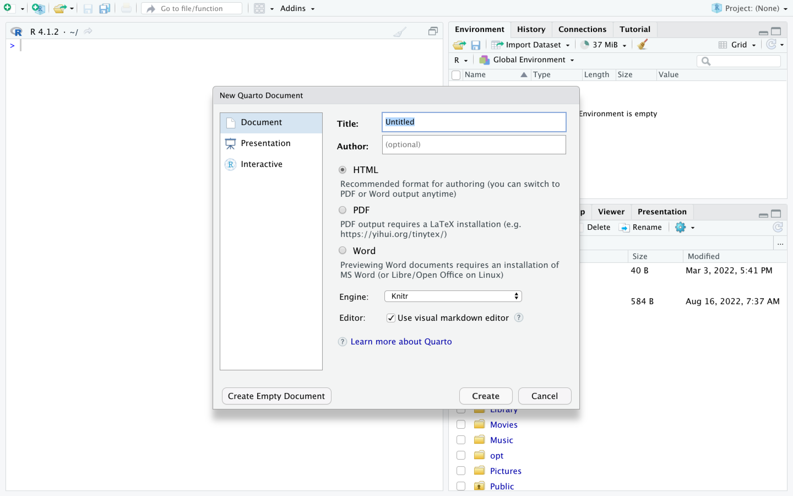
You may name your Quarto document as “My-first-qmd”.
New Quarto files will have a generic template unless you click the “Create Empty Document” in the bottom left-hand corner of the dialog box.
We will keep all pre-selected options: HTML as the output, knitr engine and the visual editor. The output might be changed at anytime and we can easily switch between the visual and the source editor. Knitr will be the engine used to execute the R codes and to render the document in Rstudio.
If you see this default text you’re good to go:

Visual Editor vs. Source Editor
Remember that in the settings we chose to use the visual editor? RStudio released a new major update to their IDE in January 2020, which includes a new “visual editor” to supplement their original editor (which we will call the source editor) for authoring with markdown syntax. The visual editor follows the WYSIWYG “what you see is what you get” approach similarly to Word or Google docs that lets you choose styling options from the menu (before you had to either have the markdown code memorized or look it up for each of your styling choices). Another major benefit is that the new editor renders the styling in real time so you can preview your paper before rendering to your output format.
Source Editor
If you toggle the source button, you will display your quarto document in the “source editor” mode. Notice the symbols scattered throughout the text (#, *, <>). Those are examples of markdown syntax, an easy and quick, human-readable markup language for document styling.

CHALLENGE 2.2 - Formatting with Symbols (optional)
Certain symbols are used to denote formatting that should happen to the text (after render it). Before that, these symbols will show up seemingly “randomly” throughout the text and don’t contribute to the narrative in a logical way. In the template qmd document, there are three types of such symbols (
##, **, <>). Each symbol represents a different kind of formatting (think of your text formatting buttons you use in Word). Can you deduce from the surrounding text how these symbols format the surrounding text?SOLUTION
##is a heading,**is to bold enclosed text, and<>is for hyperlinks. Don’t worry about this too much right now! This is an example of markdown syntax for styling, you won’t need it if you stick to the visual editor, but it is recommended to get at least a basic understanding of markdown syntax if you plan to work with.qmddocuments frequently.
Visual Editor
Let’s switch back to the visual editor. You’ll notice that formatting elements like headings, hyperlinks and bold have been generated automatically, giving us a preview of how our text will render. The However, the visual editor does not run any code automatically, we’ll have to do that manually (but we will learn how to do that later on).
We will proceed using the visual editor during this workshop as it is more user-friendly and allows us to talk about styling without needing to teach the whole markdown syntax system. However, we highly encourage you to become familiar with markdown syntax as it increases your abilities to format and style your paper without relying on the visual editor options.
Note that both the visual and the source editors offer the option to display an outline of your document  which make it easier to navigate long documents.
which make it easier to navigate long documents.
Tip: Resources to learn more about Quarto
If you want to learn more about the source editor, please see the Quarto Guide.
Now we’ll get into how our Quarto file & workflow is organized and then on to editing and styling!
Key Points
RStudio has four panels to organize your code and environment.
Manage packages in RStudio using specific functions.
Quarto documents combine text and code.
Introduction to Working with Quarto documents
Overview
Teaching: 20 min
Exercises: 5 minQuestions
What is the breakdown of a Quarto document?
What are templates in Quarto?
How can you render the input file to the specified output format?
How can you create pre-formatted for qmd document based on journal templates?
Objectives
Learn about the structure of a quarto document.
Learn how an quarto document works.
Learn how to render a .qmd file into an output format.
Understand what are jornal formats are and the advantage of using them.
Learn how to start a Quarto document in RStudio.
Anatomy of a Quarto Document
The key to our reproducible workflow is using Quarto files in RStudio rather than basic scripts to dynamically render both code and paper narrative. So let’s do a quick anatomy lesson on the components of an Quarto file (YAML header, Quarto formatted, R code blocks; also known as “code chunks”) and how to render them into our final formatted document. There are four distinct steps in the Quarto workflow:
- create a YAML header (optional)
- write Quarto-formatted text
- add R code blocks for embedded analysis
- render the document with the selected engine (Knitr in this example)

Let’s dig in to those more:
1. YAML header:
What is YAML anyway?
YAML, pronounced “Yeah-mul” stands for “YAML Ain’t Markup Language”. YAML is a human-readable data-serialization language which, as its name suggests, is not a markup language. YAML has no executable commands though it is compatible with all programming languages and virtually any application that deals with storing or transmiting data. YAML itself is made up of bits of many languages including Perl, MIME, C, & HTML. YAML is also a superset of JSON. When used as a stand-alone file the file ending is .yml or .yaml.
Quarto default YAML header includes the following metadata surrounded by three dashes ---:
- title
- author
- format
- editor

The format is selected in the wizard for starting a new document. You are able to pick from pdf, html, and word document. Basically, this allows you to export your qmd file as a file type of your choice. There are other options for output format and even more can be added by installing certain packages, but these are the three default options.
We’ll see other formatting options for YAML later on including how to add bibliography information, customize our output, and change the default settings for executing your code. Below is an example of how our YAML file will look at the end of this workshop.
---
---
title: "Data Article: Trier social stress test and food-choice: Behavioral, self-report & hormonal data (Carpentry Workshop Version)"
author: "Felix Jan Nitsch; Manuela Sellitto; Tobias Kalenscher"
format: html
editor: visual
bibliography: references.bib
execute:
echo: true
...
---
---
2. Formatted text:
This one is simple, it’s literally just text narrative formatted by using markdown (more on markdown syntax later). Markdown-formatted text is one of the benefits added above and beyond the capabilities of a regular r script. Any text section will have the default white background in the qmd document. As you might know, in a regular R file, # starts a comment. In Quarto, plain text is just plain narrative text that appears in the document. In R scripts, plain text wants to be code. In Quarto, you will need to enclose your code in special characters. Any symbols you do see that aren’t regular grammar components are for formatting, such as ##, ** **, and < >.
Tip: Bonus! You can use a variety of languages to format text and images in Quarto:
- Quarto
- HTML
- LaTeX
- CSS
3. Code Blocks:
Code blocks appear highlighted in gray throughout the qmd document. They are surrounded by three tick marks on either side (```) in source mode with the starting three tick marks followed by curly brackets {}with some other code inside. The tick marks indicate the start of a code section and the bits found between the curly brackets {}indicate how R should read and display the code (more on this in the Knitr syntax episodes). These are the sections you add R code such as summary statistics, analysis, tables and plots. If you’ve already written an R script you can copy and paste your code between the few lines of required formatting to embed & run whichever piece you want at that particular spot in the document.
Tip: Bonus! You may code with many different languages in RStudio:
- R
- Python
- Bash
- SQL
A complete list of compatible languages can be found at: https://rmarkdown.rstudio.com/lesson-5.html
Let’s take a look at the Quarto document template we have just created to see how formatted text and code are represented.

A note about coding approaches in RStudio:
When writing code in Rstudio, there are different workflows you can use, including writing code directly in the console, using a separate R script, or writing your code in a .qmd file. The best approach depends on your specific needs and preferences:
- Writing code directly in the console is useful when you want to execute code immediately to see the effect of a statement, make a quick change or calculation. However, keeping track of your written code can be challenging, especially if it takes multiple lines. Additionally, if you need to run the same code multiple times, you’ll have to rewrite it each time, which can be inconvenient if you plan to reuse it.
- Using a separate R script is a more organized way to write and save code, and you can easily reuse it later or share it with others. You can easily edit and rerun the script if you need to modify the code. However, running code in a script requires more steps than running code in the console, and it can be more challenging to modify code interactively.
- Using a .qmd file combines the advantages of both the console and R script. A .qmd file allows you to write . R code and text in the same document make it easier to organize and document your work. Additionally, you can run the code directly in the paper, which makes it easier to modify and rerun code interactively.
We will use the third approach for most of this workshop since we focus on creating a reproducible paper.
4. Rendering your Qmd document:
Simply put, rendering is the process of converting a document into a file format or a medium that is paginated or has the concept of pages. Clicking the render button will compile the code, check for errors, and finally, output the type of file indicated in your yaml header. You may select the option “Render on Save” to see a preview of your document every time you save edits. Attention: your qmd document may not run and render as your indicated output if there are any errors in the document so it also functions somewhat as a code checker.
Try it yourself!
We’re going to pause here and see what the Quarto document does when it’s rendered. We’ll just use the generic template, but when we’re working on our own project, rendering periodically while we’re editing allows us to catch any mistakes early. We’ll continue rendering our qmd throughout the lesson to see what happens when we add our markdown and knitr syntax and to make sure we aren’t making any errors.
This is a little preview of what’s to come in the later episodes: Click the “render” button.
Before you can render your document, you’ll need to give it a file name and choose what folder you want to save it to. Choose my_first_qmd.qmd as your file name and save it to an easily accessible directory in your file system.
Your document should render like that:
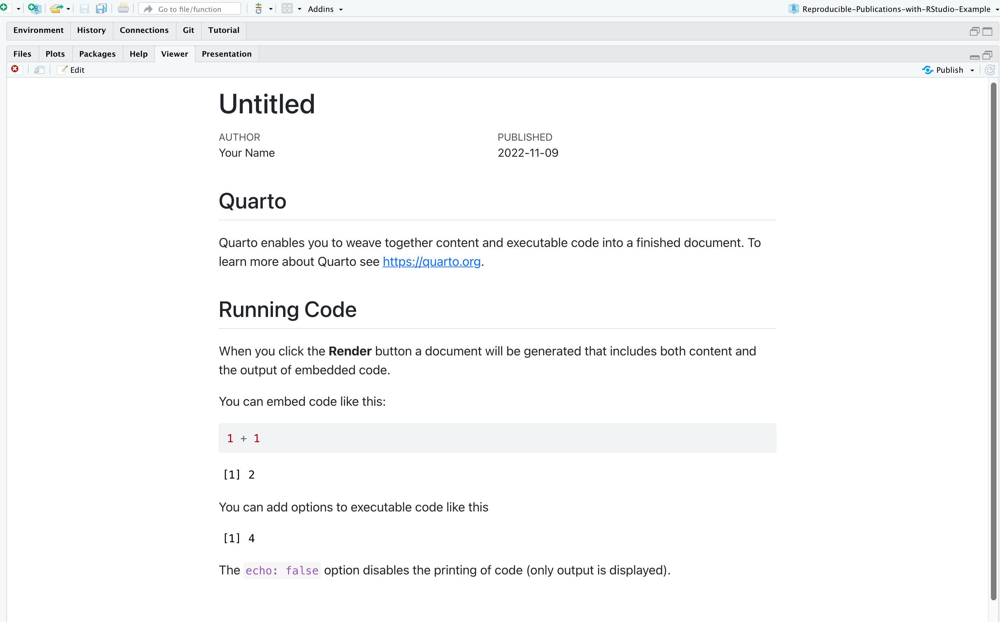
Warning: Enable Pop-ups!
If using the Jupyter Hub RStudio set up, you may not see your preview until you enable pop-ups, since the webrowser of your choice may block pop-ups by default.
CHALLENGE 3.1 - Rendering the document in another format
Suppose you want this .qmd document to render as a word document. What options would you have?
Solution:
You may change the output format in the YAML to
docx. Note that to preview word documents you need to have MS Word, Libre or Open Office installed on your machine. Alternatively, you may enter the following command in the terminal: `quarto render my_first_qmd.qmd –to docx
Note about PDFs
In order to create PDFs you will need to install a recent distribution of LaTeX. We recommend the use of TinyTeX, which you can install with the following command:
quarto install tool tinytex.
Creating Pre-formatted Papers (Demonstration Only)
We have learned how to start a new document on RStudio and we will learn good practices for project organization next. But, let’s say you are writing a paper having a journal in mind? Writing it in your own style and then formatting prior to submission will duplicate your work, right? The good news is that RStudio and Quarto can give us a hand with that.
Quarto offers some journal formats and made them available within the quarto-journals GitHub organization, including:
- Association of Computing Machinery
- American Chemical Society
- Biophysical journal
- Elsevier Journals
- American Statistical Association Journals
- Journal of Statistical Software
- Public Library of Science
This list is expected to rapidly grow with new contributions submitted to the Quarto Journal Templates Repository. You may also create your own templates following these guidelines.
Journal templates require features of Quarto version 1.2 so we need to ensure we have the right Quarto version. You can check your Quarto version in the Terminal with command: quarto --version. We should be good with that for this workshop, but if you are using a lab computer later on, you may need to update Quarto. See: pre-release versions of Quarto
Quarto uses a template command that can be called in the terminal to create an article in any of these formats. Suppose you want to use the Elsevier template. In Rstudio, in the terminal (if not showing, select Tools > Terminal > New), type quarto use template quarto-journals/elsevier. Then, follow the steps below:
- 1) Trust the authors:
? Do you trust the authors of this template (Y/n) › Yes - 2) Give a name to the directory ` ? Directory name: › elsevier-template`
This will install the extension and create an example qmd file and bibiography with all required files that you can use as a starting place for your article:
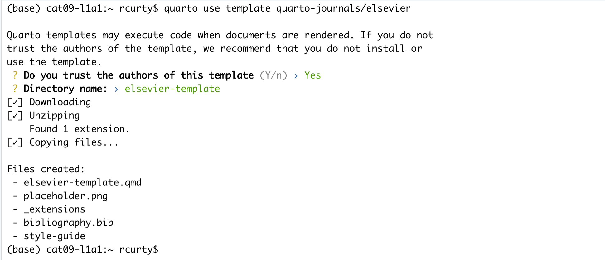
Locate the directory where you have saved the template. You can make a copy of elsevier-template.qmd document or rename it as start writing your paper following the journal’s formatting requirements.
It is beyond the scope of this workshop to cover journal templates more extensively, but if you want to explore further how to apply templates, apply styling and even create your own templates, check the Quarto Journals GitHub page.
Tip
Before proceeding always check if the template of interest meets the most updated guidelines in the journal website, since these templates are maintained by the Quarto community, not the journal editors.
Key Points
An qmd file is comprised of a YAML header, formatted text in qmd and code blocks.
The render function converts the file into the chosen output format.
Rstudio has some journals’ formats that can save you some time or you can make your own for frequent submissions.
Good Practices for Managing Projects in RStudio
Overview
Teaching: 30 min
Exercises: 10 minQuestions
What are good research project management practices?
What is an R Project file?
How do you start a new or open an existing R Project?
How do you use version control to keep track of your work?
Objectives
Best pratices for working on research projects involving data.
The purpose of using .Rproj files.
Using version control in RStudio.
Starting or continuing an R project.
Managing Research Projects in R
Now that we’ve learned some of the basics of authoring Quarto documents, let’s take a step back and talk about research project management as a whole.
The ability to integrate code and narratives is a major advantage of the RStudio environment, especially considering the scientific process is naturally incremental, and many projects start life as random notes, some code, then a manuscript, and eventually everything ends up a bit mixed together. To complicate things further, we are often working with other collaborators, lab members, graduate students, faculty from the same or different institutions, which makes it that much more difficult to keep projects organized. When you throw data into the mix (sometimes huge amounts of it!), it’s integral to use best practices to maintain the integrity of your analysis and to be able to publish high quality and reproducible research. Quarto is a powerful tool, but it can’t be fully utilized unless your project documents, scripts and other files are well-organized. So let’s take a look at RStudio’s features to manage projects and discuss some of the best practices when working with data and collaborators.
Research Project Stress Points
We often have organizational or logistical stress points in our research that may become breaking points, especially when it comes to working with collaborators, returning to a project after a hiatus, or dealing with data and scripts. Let’s discuss three of those common stress points:
- File/folder disorganization
- You cannot find your files on your computer (or your cloud storage)
- Multiple versions of files with names such as “finaldraft_4.txt”
- Path issues when trying to run code
- Reviewers or colleagues cannot re-run your code/analyses
- Storage and sharing issues
- Files are only saved to your computer and are vulnerable (or have already succumbed to computer/hard drive failure
- When working with collaborators, they (or you) don’t share the files needed
- Files are shared via email attachments
- Difficult to know if you have the latest version of documents
- Losing track of project status
- You cannot remember where you are in a project after being away for an extended period (or what you worked on the previous day…no judgement)
- You aren’t sure what you should be working on next
- You have various to-do notes spread across your office or home (or never write them down in the first place)
Discussion
To what extent do these stress points affect your research projects? Are there additional issues that you’ve encountered that slow down or derail your work due to issues with project management?
Discussion: Antidotes
What are some practices you implement to keep your project materials organized?
Antidotes
A good project layout will ultimately make your life easier:
- It will help ensure the integrity of your data
- It makes it simpler to share your code with someone else (a lab-mate, collaborator, advisor, etc.)
- It allows you to easily upload your code with your manuscript submission
- It makes it easier to pick the project back up after a break.
- It makes your research reproducible!
We’ll discuss three aspects of project management and then implement those practices for the remainder of this workshop in the RStudio environment.
- File/Folder Organization
- Storage & Sharing
- Using Version Control
Then, we’ll get started on our project!
Project File/Folder Organization
Important principles:
Although there is no “best” way to lay out a project, there are some general principles to adhere to that will make project management easier:
Practice good file-organization
Good Enough Practices for Scientific Computing gives the following recommendations for project organization:
- Put each project in its own directory, which is named after the project.
- Put text documents associated with the project in the doc directory.
- Put raw data and metadata in the data directory, and files generated during cleanup and analysis in a results directory.
- Put source for the project’s scripts and programs in the src directory, and programs brought in from elsewhere or compiled locally in the bin directory.
- Name all files to reflect their content or function.
- Additionally, we’d recommend to include README, LICENSE, and CITATION files!
For our project we’re working in today, we used the following setup for folders and files:
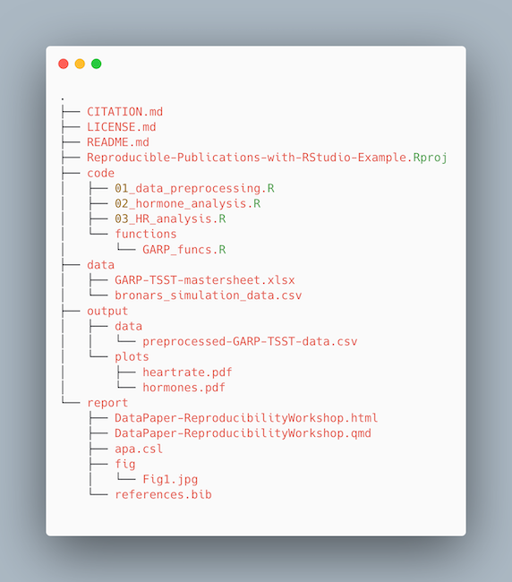
Challenge 4.1: Take a few minutes to look through the workshop project files
Please take some time to look through the project files. Either the screenshot above, or you may browse the files on GitHub at https://github.com/MonashDataFluency/r-rep-res-quarto-example. What do each of the directories (folders) contain? What is their purpose?
See the solution drop-down for an explanation of each directory’s contents.
Solution:
- code: contains the scripts that generate the plots and analysis (found in
output/plots)
- /functions: contains custom functions written for the data pre-processing
- data: this folder contains the raw and cleaned data files
- /foodchoice_data: contains the individual data files from food choice trials
- output: contains processed/transformed data and all plots generated
- /data: contains the output data file after applying custom pre-processing function
- /plots: contains pdfs of the plots generated from the plot scripts in the code folder
- report: all files needed for the publication of the research project, including:
- .qmd file for the paper and additional files needed for rendering the paper
- images created specifically (not through the analysis scripts) for the paper
- /output: contains the final output of the Quarto paper
- R-repro-pub.Rproj: the R project file that lives in the root directory.
- README.md: a detailed project description with all collaborators listed.
- CITATION.md: directions to cite the project.
- LICENSE.md: instructions on how the project or any components can be reused.
Practice good file-naming
The three principles of file-naming are:
- Machine-readable
- Friendly for searching (using regular expressions/globbing)
- No spaces, unsupported punctuation, accented characters, or case-sensitive file names
- Friendly for computing
- Deliberate use of delimiters (i.e. for splitting file names) data-analyses-fig1.Rwith-used consistently as a separator
- Human-readable
- Name contains brief description of content
- Borrow from clean URL practices:
- “slug” i.e. the part of a url that is human readable
- i.e.
data-analyses-fig1.R
- Plays nice with default ordering
- Use chronological or logical order:
- chronological: filename starts with date.
- i.e.
2022-01-01_data_analyses.R - Use ISO 8601 date standard
- i.e.
- logical: filename starts with a number or keyword/number combo.
- i.e.
01_data_preprocessing.Rsee code directory - i.e.
CC-101_1_data.csvsee data directory
- i.e.
Adapted from https://datacarpentry.org/rr-organization1/01-file-naming/index.html. For more tips on file naming, check: The Dos and Don’ts of File Naming.
Challenge 4.2: File name syntax
Given the filename
CC-101_1_data.csvand2022-01-01_data_analyses.R, why does it make sense to use both-and_as delimiters/separators?Solution:
In
CC-101_1_data.csv, the-is used as part of the keyword that is shared between a number of files. the_separates it from the trial number and description. If one were to split the filename on the_, the keyword would be maintained and the trial number would be separated out. In the2022-01-01_data_analyses.R,-is used for a delimiter for the date, between year month and day._is used between the rest. This allows us to split on_which would preserve the date (separate from other file info).It’s good to strategize on the best way to name files to anticipate future uses of the information contained within the filename.
Use relative paths
A path specifies a series of steps to a file. It consists of a series of directory names, and finally a filename, separated by /. Windows traditionally uses \ as the separator, but in R we can always use /.
Absolute paths start with / on Mac or Linux, denoting the “root” directory. On Windows, absolute paths start with a drive letter such as C:. We will try to avoid using absolute paths.
Whenever R is running, it has a current working directory, which you can check with getwd(). Relative paths don’t start with / or C:, and refer to directories and files relative to the current working directoy.
For example we might read a file using a relative path like:
df <- read.csv("data/foodchoice_budgetlines.csv")
whereas an absolute path might look like:
# Windows
df <- read.csv("C:/Users/wilma/Desktop/project23/data/foodchoice_budgetlines.csv")
# Mac
df <- read.csv("/Users/wilma/Desktop/project23/data/foodchoice_budgetlines.csv")
You can also use the special direcory name .. to refer to the parent directory, eg ../project22/data/foo.csv.
We will try to always run code with our project directory as the current working directory.
Quarto documents by default set the working directory to the directory containing the document. In a later section we will discuss how to disable this annoying behaviour! (An older solution to this problem involved use of a package called here to find files relative to the project directory.)
Treat data as read only
This is probably the most important goal of setting up a project. Data is typically time consuming and/or expensive to collect. Working with them interactively (e.g., in Excel or R) where they can be modified means you are never sure of where the data came from, or how it has been modified since collection. It is therefore a good idea to treat your data as “read-only”. However, in many cases your data will be “dirty”: it will need significant preprocessing to get into a format R (or any other programming language) will find useful. Storing these scripts in a separate folder, and creating a second “read-only” data folder to hold the “cleaned” data sets can prevent confusion between the two sets. You should have separate folders for each: raw data, code, and output data/analyses. You wouldn’t mix your clean laundry with your dirty laundry, right?
Treat generated output as disposable
Anything generated by your scripts should be treated as disposable: it should all be able to be regenerated from your scripts. There are lots of different ways to manage this output. Having an output folder with different sub-directories for each separate analysis makes it easier later. Since many analyses are exploratory and don’t end up being used in the final project, and some of the analyses get shared between projects.
Include a README file
For more information about the README file and a customizable template, check this handout. Make sure to include citation and license information both for your data see creative commons license and software (see license types on Github). This information will be critical for others to reuse and correctly attribute your work. You may also consider adding a separate citation and license file to your project folder.
Again, there are no hard and fast rules here, but remember, it is important at least to keep your raw data files separate and to make sure they don’t get overridden after you use a script to clean your data. It’s also very helpful to keep the different files generated by your analysis organized in a folder.
*what’s this .Rproj file? We’ll explain in a bit.
Storage and Sharing
Backup your work
Having a solid backup plan in case of emergencies (say your hard drive on your computer fails) is essential. The general guideline for back ups is to adhere to the 3-2-1 principal which dictates that you should have 3 copies, on 2 different media, with 1 copy offsite. Your decision on backups will be based on your own personal tolerance but we recommend at minimum to avoid only having a copy of your project on your personal, work computer or a lab computer at all costs.
At the very least, you should backup your project into cloud storage (either provided by your university or paid for yourself). Common cloud storage platforms include Google drive, Box, OneDrive, Dropbox, etc. Backing up a project on a local device to cloud storage allows you to meet two of the 3-2-1 criteria (2 different media and 1 offsite). If you’re working with at least one collaborator and they also keep an up-to-date copy of the project on their computer, you’re set!
Version Control hosting services
If your research project involves code, the best way to make sure you have your work backed up AND keep track of your code and data is to use a version control hosting service such as GitHub - though we’d recommend using version control for any large projects.
The main three version control hosting services are GitHub, GitLab, and BitBucket, to see a comparison of the available options, see this comparison on LinkedIn
We will proceed using GitHub because it is the most used version control platform to date.
Using Version Control
Ok, now let’s talk about implementing version control in your project through RStudio! But first… let’s quickly clarify the difference between Git and GitHub. We already said that GitHub is the version control hosting platform. Git is the version control system and does not have to be used with GitHub. You can use Git and then host your code on Bitbucket for example, or save to your Google drive. In fact, you can use Git on your local system only and never save it to a cloud storage platform. However, version control hosting platforms such as GitHub enhance the benefits of version control and offer incredible collaboration features. The difference between the two can be a bit confusing because they are so often used together, but the more you use them the more it will make sense. Soon enough you’ll be wondering how you even completed a code project without version control.
There are actually many ways to use Git, you could use it on GitHub only (though that suffers from lack of options and is a bit clunky), there is a Desktop interface, many serious programmers use it on command line. HOWEVER, RStudio has Git controls built in so we’ll use it there - all in one place!
Project Environments in R
Environments are a rather advanced topic in programming, but we will introduce some capabilities for projects in R that increase the reproducibility of your code. Essentially, a project environment allows us to save (or take a snapshot) of our R version and dependencies - aka what packages/package versions are required to run our code without error. This can be important when you are collaborating with others and may be unsure of whether you are working with the same R and package versions. Another common issue is if you try to run very old code from a previous project - the older the code, the more likely that errors will crop up or that the code will no longer run as it used to. To take advantage of project environments we will use a package called renv which is the successor of packrat which used to be the de facto package in R for managing environments.
However, as noted in this RStudio article on renv, using renv does not automatically make your project reproducibile, nor is it bullet-proof. Sometimes other factors come into play that may alter the results of your code despite using renv, such as operating systems, compilers etc. To go one step further in assuring reproducibility, many use ‘containers’ such as Docker or Kubernetes. However, that is beyond the scope of this workshop.
We will see in episode 8 how one can implement project environments with renv to increase reproducibility with R projects.
Before we use Git and environments in RStudio project, we must be working in an R Project so let’s talk about how R Projects work in RStudio.
Working in R & Quarto Projects
R Project
One of the most powerful and useful aspects of RStudio is its project management functionality. We’ll be using an R project today to complement our Quarto document and bundle all the files needed for our paper into one self-contained, reproducible bundle. An .Rproj file helps keep your R scripts, data and other files together - just navigate through your file system to get to your project directory and double click on the .Rproj file. The added benefit is that the .RProj file will automatically open RStudio and start your R session in the same directory as the .Rproj file and remember exactly where you left off. .RProj files are powerful ways to stay organized on their own, but they also unlock the additional benefit of being able to use Git within RStudio.
Quarto Projects
Perhaps, confusing but we have an additional “type” of project in the RStudio ecosystem called a Quarto project. Thankfully, we don’t necessarily have to pick between using R and Quarto projects because a Quarto project is just an R project - with some additional capabilities. That addition is enhanced project and style controls in the form of a YAML file called _quarto.yml . To keep things simple, if you are going to use Quarto documents, use Quarto Projects, if you aren’t, stick to an R project. And no worries, you can always add a _quarto.yml file if you have just an R Project which can retroactively turn your project into a Quarto project. Let’s see how to create a Quarto project in the next episode.
Challenge 4.4: R Project in “root” folder
.Rprojfiles must be in the root directory of your project folder/directory. What is the root directory again (look back at the relative paths intro)?
Key Points
Use best practices for file and folder organization. This includes using relative file paths as opposed to complete file paths.
Make sure that all data are backed up on multiple devices and that you treat raw data as read-only.
We can use Git and Github to keep track of what we’ve done in the past, and what we plan to do in the future.
Rproj files are pivotal to keeping everything bundled and organized.
Getting Your project set up with Version Control in RStudio
Overview
Teaching: 30 min
Exercises: 10 minQuestions
How do I start or continue a project with Git versioning?
What are the features in the RStudio Interface for working with Git?
What are the basics of the Git versioning workflow?
Objectives
Copy an existing project on Github to make contributions
Open a project with Git versioning in RStudio
Learn the basics of Git - pull, add, commit, push
Make our first edits in a verison controlled project
Using R projects and Version Control in RStudio
Using version control is a powerful feature to make your research more reproducible and better organized. In order to use versioning while working in RStudio the first step is to make sure your work is set up as an R Project, because you may not use the versioning features in RStudio without one. There are three options for doing this depending on your given scenario.
Three Methods of Setting up Versioning with an R Project
There are several options for working with R projects in RStudio. If you aren’t already working in an R Project, you can create a new one. There are three options here:
- New Directory - start a brand new R project (with the option of version control).
- Existing Directory - add existing work to a R project (with the option of setting up version control).
- Version Control Continue an existing R project that already uses version control (i.e. download from GitHub).
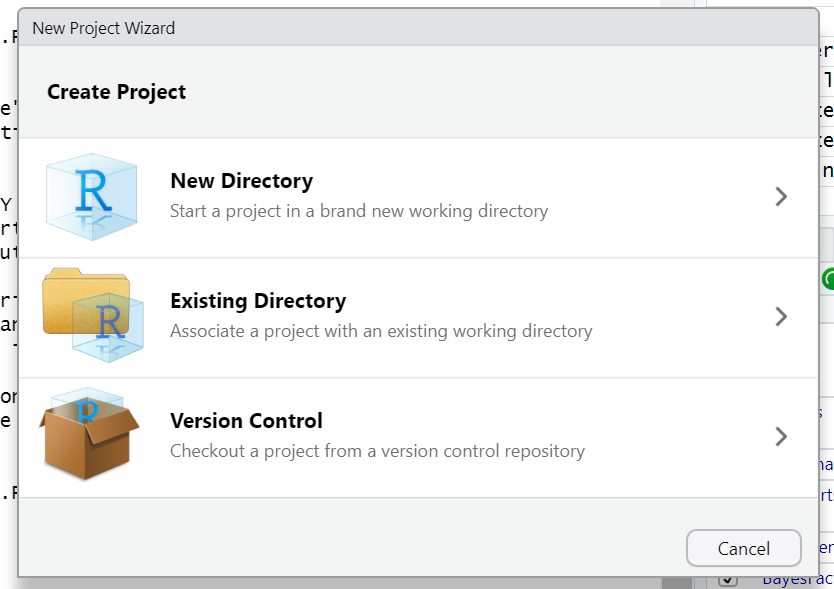
The third option would be a project already under version control but options 1 and 2 will also give you the opportunity to use or add versioning to the project. Let’s see how that would work.
Starting a R Project with Version Control
Method #1
To start an R project, you would navigate to File > new project rather than just File > new file.
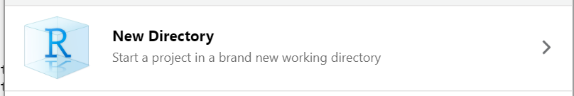
After choosing New Directory chose new project on the next menu options.
Then, to use version control, make sure to check the “Create a git repository” box as highlighted in this screen shot: 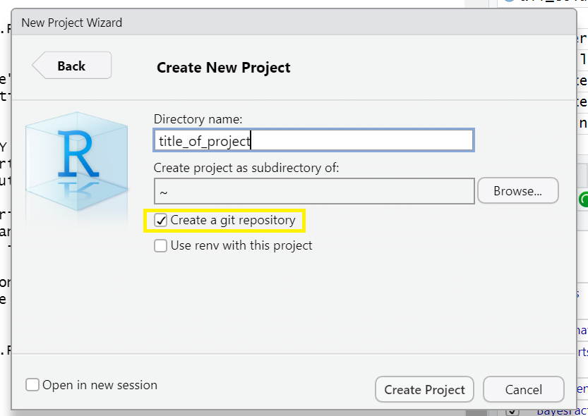
*Note when you choose directory name, it will create a new directory in the directory you specified along with an .Rproj file of the same name. Avoid spaces here. underscores “_”, dashes “-“ or camel case “NewProject” is the recommended way to name this directory/file.
*Optionally, check the box in the bottom left corner “Open in new session” if you want it to appear in a new RStudio window.
Add versioning to an existing project
Method #2

We won’t take the time to cover this here, but if you’ve already started a Quarto project WITHOUT version control, you have the option to add version control retrospectively. You can also add existing R files to a project and setup version control if you’ve done neither. To see a tutorial of this process, please see episode 14 “Using Git from RStudio” in Version Control with Git.
This is by far the most labor intensive way to do it, so remember to add version control at the beginning of any new project.
Continue a version-controlled project
Method #3
 The final option is to continue a version controlled project. This is the option we will do for our workshop.
The final option is to continue a version controlled project. This is the option we will do for our workshop.
First, indicate which version control language you will be using (Subversion is another version control system, though less popular than Git)

When you choose this option there will be a place to paste the url of the GitHub (or other hosting platform) url. The name of the repository will automatically populate. Just choose which directory on your computer you wish to save the project directory and your good to go!

Our turn!
We have a repository already prepared for this workshop at https://github.com/MonashDataFluency/r-rep-res-quarto-example. We are going to use the third option to download this repository from GitHub and work with it hands on. You will need this repo in your working environment if you would like to follow along through this workshop. Let’s take a second to acquaint ourselves with GitHub. At this link, you may sign into your GitHub account or create one if you have not already.
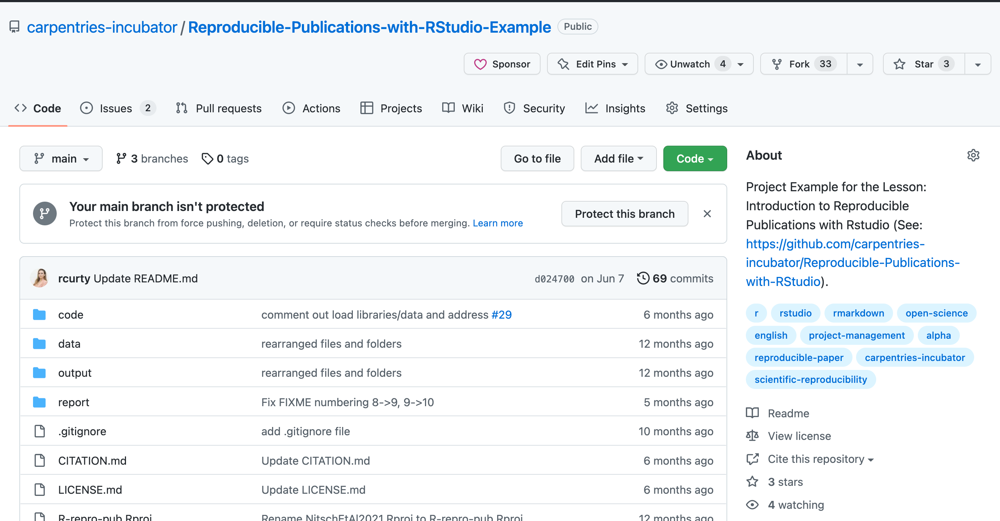
The two main sections are files and directories and the README which should contain a narrative description of the project.
We are each going to make a copy of this repository to use for this workshop. To do so we will do what’s called “forking” on GitHub. A Fork is a copy of a repository that you get to experiment with without disrupting the original project.
On Github in the upper right hand corner of the repository, click on the button that says “Fork” - see highlighted example below:
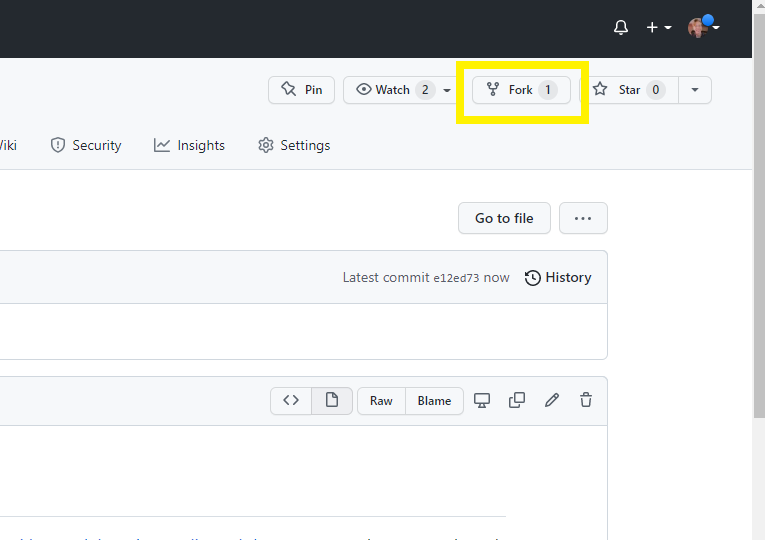
If you are a member of any organizations on GitHub, you will be asked whether you want to fork to your account or to an organization. Choose your personal account for this workshop. GitHub will process for a few moments and voila! You have your own copy of the workshop example repository.
Now, click on the green Code drop-down and then click on the copy icon next to the repository url:

Now, let’s return to RStudio:
Click File > New Project > Version Control > Git.
So back to the url you copied from GitHub. Navigate again to File > New Project > Version Control > Git. Paste in your url and click the “Create Project” button.
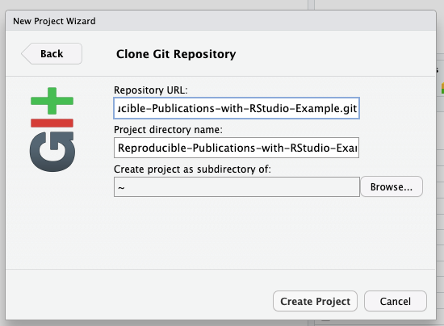
Now you have cloned a copy of your git repo from Github to your working environment.
If you’re working in the JupyterHub environment you will need to configure Git with your name and email before you’ll be able to commit the changes you make during this workshop. Substitute your name and email address in the commands below and paste them into the Terminal panel of RStudio.
git config --global user.email "you@example.com"
git config --global user.name "Your Name"
Woo hoo! We have the project we’re working on for this workshop opened in RStudio and set to use version control!
Git not detected on system path
If you are using Git for the first time in RStudio at this point you may be getting a notification that Git isn’t set up to work with RStudio.
See the solution below:
Solution:
To set it up we need to go to Tools > Global Options
First, make sure “Enable version control interface for RStudio projects” is checked. Next, you must make sure that the Git executable path is correct. For macs, more than likely the path will have automatically populated. In all likelihood that path is
/usr/bin/git. Windows users may find that the correct path is also pre-populated, but it is likely that you may need to manually add it by clicking “browse”. More than likely your path will be something likeC:/Program Files/Git/bin/git.exe. If not, search for where Git for Windows was installed (Git) go into the bin folder and select the ‘git.exe` file.Ok! Now that we set that up (by the way, this is a one time set up -it will work now for all future projects in RStudio on your device), we should be able to open our project from GitHub in RStudio.


Now, let’s dive in to how to use version control.
Using Version Control in RStudio
There are two places we can interact with Git in the RStudio interface.
- Menu bar

- Environment/History pane

Ok, but what do all the options mean? We won’t go through them all, but here are the basics to get started versioning your project.
Git Workflow
The most simple workflow for version control (working on your computer only) is referred to as “add” and “commit”:
But what do those words even mean?
add: choose a file or files to take a “snapshot” of. Aka what files do you want to add to your next version?
Commit: Taking a “snapshot” of a selected version of your project. The snapshot will only include the files you “added”, typically only files that you’ve edited since your last commit.
You may have a few to many commits in a single work session.
When you commit, you add a “commit message” aka a short line of text (recommended 50 characters or less) that describes the changes that were made to the file(s) you added. This helps keep your versions organized and makes it easier to go back to remember what you did or to restore your work to exactly the version needed if you make a mistake or want to implement a change.

Git Workflow with GitHub
If we are saving our work to a version control hosting cloud platform such as GitHub, our workflow gets a bit more complex, we add a “pull” and “push” step at the beginning and end of a work session.
Pull > add > commit > push
Pull: download the most recent version of the repository from GitHub to your local computer.
Push: upload the most recent version of the repository to GitHub from your local computer.
Put a pin in pulling and pushing for now. For the time being as we edit our paper we will just stick to adding and commiting. At the end we’ll see how to use push to GitHub, and you can experiment with pulling later on.
Tips for working with Git
- You should pull each time you start working on your project after a hiatus, or before each edit if you know a team member is working at the same time.
- Commit frequently, each commit should be a distinct set of edits which you can summarize in 50 characters or less. Don’t add a bunch of unrelated edits to the same commit, it makes it harder to look back through your “snapshots” and find the right one if you need to.
- At the end of your work session (or more frequently if you are working at the same time as team members), “push” your commits to the remote repository - this is the only way your local changes get added to your team’s remote repository.
This pull, add, commit, push routine will become second nature. Pulling at the beginning and pushing at the end of your work session becomes a sort of ritual that marks the beginning and end of your work session.
Your first edit
Now, let’s open up the report in this repository that’s already been drafted. You will find it in the report directory with filename: DataPaper-ReproducibilityWorkshop.qmd. Open it up and we will make an edit to the yaml front matter of this draft report so we can practice using version control.
In the title add “(Carpentry Workshop Version)” and make sure to save it.
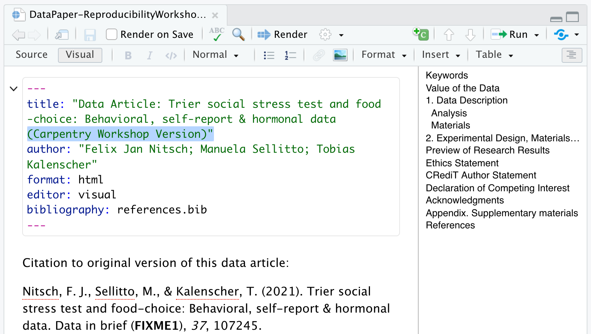
Now, in the Environment panel, toggle to the Git tab. You’ll see the file that was edited with a check mark next to it. Click the check mark to “add” . Note that if you edited more than one file you could choose any or all of the documents to “add”.
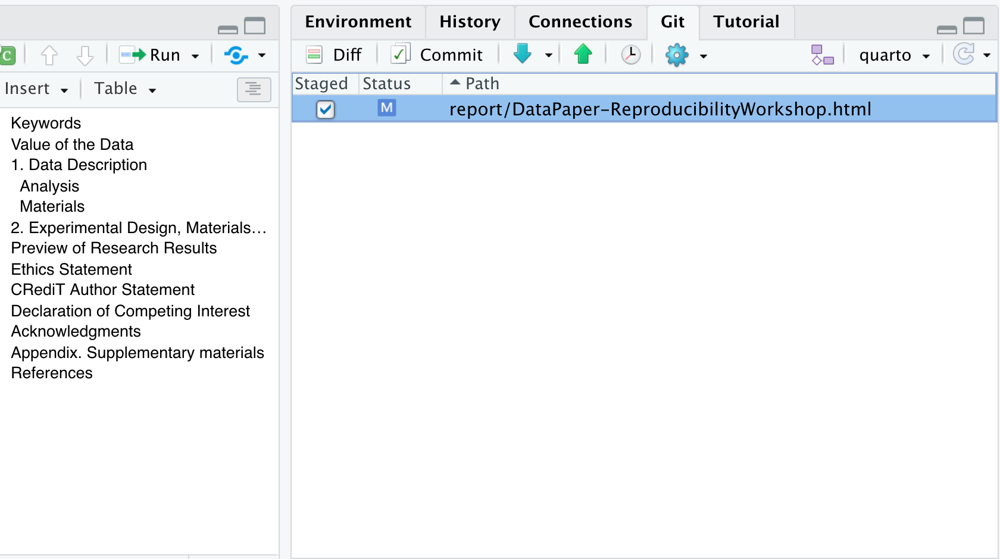
Now, click commit. A dialogue box will pop up. You’ll need to add a commit message to proceed. Add something about editing the title. The difference between your files will show in the bottom panel.

Hit commit and a dialogue box will show a completed commit. Warning: DO NOT PUSH anything yet!
You made your first commit!
Discussion: (optional) Utilizing .gitignore files
a
.gitignorefile is used to signal to Git to NOT track versions of specific files. One instance where this is used in a data analysis project is with data files that are too large to be uploaded to GitHub.Now, there are some caveats to this, so in what situations would it make sense to add data to the .gitignore and what situations would it not? What else could you imagine you wouldn’t want to track in your research project?
Solution:
Why and when would it be a good idea to add data files to the
.gitignore?
- With raw data files - since they will not be modified (remember: raw data = read only).
- With sensitive data - This should absolutely not be pushed to GitHub
Why and when would it not make sense to add data files to the
.gitignoreso they will be available in the Git repository.
- pre-processed data files - these are the data files that are edited - processed from the raw data
- small data files - may not make much of a difference whether they are tracked or not
- the first time you add data files - You can’t push data files to GitHub unless they are tracked. So if you want your data on GitHub, but don’t want to track it, you must make sure you push once and then add the file to the .gitignore file.
Challenge: (optional) Add the data files/directories to .gitignore
Add the data (all of the raw data files) to the
.gitignore.
Hint: there are two ways to do this.
Hint2: add a forward slash/after directories.Solution:
1) open the .gitignore file by double-clicking on it in the file view pane, on a new line add
data/. Save the file and don’t forget to commit it. 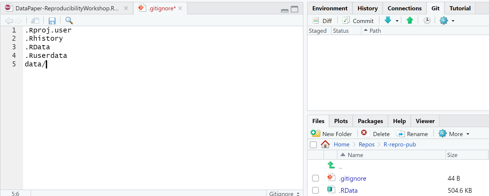 2) Click on the settings gear in the Git tab of the environment pane. Click ongitignore. On a new line adddataand click save. Don’t forget to commit the.gitignorefile. 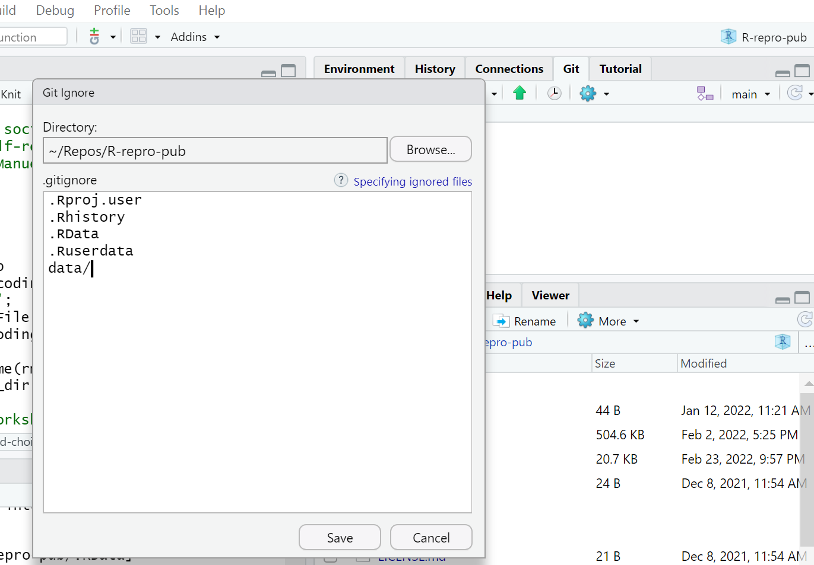
Key Points
R Studio has Git version control functionality built in.
Forking a Github repository makes a copy of the repository into your personal account on Github.
You can clone a git repository from Github to your local disk using RStudio.
For this workshop each learner will work with their own fork of the “R-Repro-pub” repository.
Writing and Styling Qmd Documents
Overview
Teaching: 10 min
Exercises: 10 minQuestions
What is the Visual Editor in RStudio?
Which features does the Visual Editor have?
How can I can apply styling and formatting to Qmd documents in Rstudio more easily?
How to add inline code?
Objectives
Learn how to enable the visual editor.
Get familiar with its basic functionalities.
Apply formatting and styling using the visual editor.
Learn how to add inline code to your qdm document.
Formatting Qmd Documents with the Visual Editor
As we mentioned earlier, the visual editor in RStudio makes formatting much more effortless. It provides improved productivity for composing longer-form articles and analyses with Quarto. Markdown documents can be edited in either source or visual mode. To switch into visual mode for a given document, toggle on the visual option at the top-left of the document toolbar (alternatively for windows, the ⌘⇧ F4 keyboard shortcut). This will prompt a formatting bar through which you can apply styling, add links, create tables, and others similar to functions you find in google docs and other document editors. Note that you can switch between source and visual mode at any time (editing location and undo/redo state will be preserved when you switch). Let’s try it! Feel free to follow along or just watch this quick demo. But first, make sure to have your visual editor enabled on your screen. Also, make sure to open your DataPaper-ReproducibilityWorkshop.qmd file located at the report folder.
If you’d like to learn more about markdown basics and use the source mode to format you documents check Quarto’s markdown basics.
Editor Toolbar
The editor toolbar includes buttons for the most commonly used formatting commands:

Additional commands are available on the Format, Insert, and Table menus:

Tip: Inserting anything with shortcuts
You can also use the catch-all ⌘ / shortcut to insert just about anything. Just execute the shortcut then type what you want to insert. For example:
/liswill prompt listing options.
Let’s get some formatting done in our example paper. We will look for some Examples and replace with the recommended style so we can all produce a similar output at the end of the workshop.
Rendering Documents
When you do your first render, the pop-up may be blocked by your browser. You can unblock the pop-up or in the Background Jobs pane, find the local host url and copy+paste that into your browser.
Applying Emphasis
At the very top of the document we have a recommended citation for the sample data paper (Example 1). We want to emphasize the title of the journal, “Data in brief” in italics. Select the text and click in the I icon and voilà! Remember to delete (Example 1).
Adding Links
In the same citation we have just worked on, let’s now add a link to it by selecting and copying the doi address (Example 2). Then, click on the link icon and paste the address in the URL field. Simple right? If you prefer, you can also the drop-down insert menu, or even use shortcuts. By hovering the mouse over the desired icon, you will see which keys you should use. For a complete list of editing shortcuts, check this link. Tip: if you didn’t intend to use a shortcut and want to reverse its effect, just press the backspace key.
Adding Headings
Adding headings to a a Quarto markdown document in Rstudio is as simple as applying links. Let’s say we want the abstract section as a Heading Level 2. We can select the “abstract” then, and under “Normal” on the left-hand side of the menu, we can choose the desired level. Again, all the shortcuts will be listed next to the styling in the menu. Now apply the same heading to keywords and Level 2 to “Value of the Data” (Example 3).
Creating Tables
Because creating tables manually in qmd documents could be a little painful for beginners, Rstudio released an add-in functionality for tables back in 2018. The new visual editor, however, have made the process to create qmd tables more similar to other editors we use daily. In our template, we have the specification table with 10 rows and two columns. If we were willing to add that table, we could do that by inserting a table to a selected part of the documents and by specifying the desired number of rows and columns. Including a caption is optional, but recommended. We can add or delete rows and columns, add a header that will be set bold by default but can be changed, and set the desired alignment. Select the desired text and click on the crossed T icon if you wish to clear formatting.
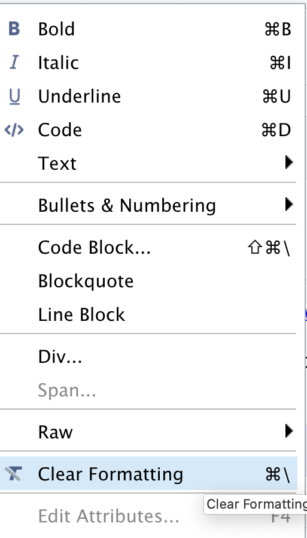
Creating Bullet and Numbered Lists
Again, similarly to other document editors, Rstudio allows you to turn text into bullet or numbered lists. Let’s apply a bullet list to the paragraphs specifying the “Values of the Data” reported in the data paper (Example 4). Assuming we were willing to create a numbered list instead, we could have followed the same process and chosen the other icon. We can also sink or lift the listed items.
Adding Images
You may need to include static images to your manuscripts. For that, you can use the insert image function, click on the painting icon or even use the shortcut that shows right next to the function in the menu. After browsing and upload the desired image you may also specify the caption and the image title, as well as adjust dimensions if needed. Let’s insert image for Fig. 1 (Example 5).
Adding Formulas
If you have math formula in your manuscript there are three different ways you may insert one. Let’s look for (Example 6) for an example. Point and click at the insert menu, use the catch-all ⌘ / keyboard short and then get to inline math mode, or type the formula content between dollar signs $. You will notice that the color and font type will change, as Rstudio identifies the block as an inline equation.
Keyboard Shortcuts
As you become a more regular Rstudio user, you may also consider using some keyboard shortcuts for all basic editing tasks. Visual mode supports both traditional keyboard shortcuts (e.g. ⌘ B for bold) as well as markdown shortcuts (using markdown syntax directly). For example, enclose bold text in asterisks or type ## and press space to create a second level heading. Here are some of the most commonly used shortcuts for Mac users:
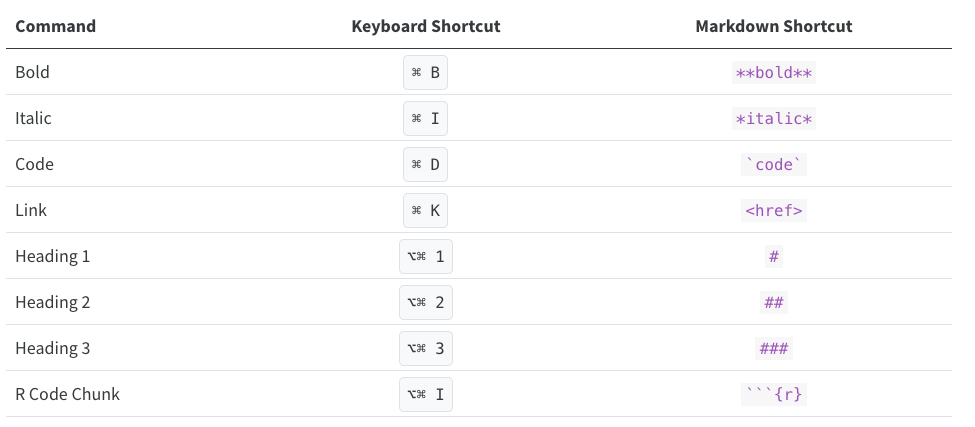
Tip: Windows users should replace in the shortcuts above ⌘ by ctrl and ⌥⌘ by alt (+) ctrl.
Other Editing Features
The visual editor allows users to insert images by browsing their location or copying and pasting it to the Qmd document directly. There are also options to add html, line blocks, blockquotes, and footnotes. Up next we will learn more about how to add code chunks. In further episodes we will also learn how to insert citations and create a bibliography.
Bonus Content: More Styling with Fence Divs (Demonstration Only)
Quarto also allows some cool styling using colons to create fenced divs. The advantage of using fenced divs is that you may section styling/layout to pieces of your content more easily, using an unified and syntax, while also protecting and preserving formatting across different types of outputs. Essentially, these will adopt the following structure:
- Start and end with an equal number of colons being minimum of 3
::: - Add curly brackets to indicate the start/end of a class or name, e.g.,
{.class}
We won’t have time to cover these extensively, but let’s take a look at a few examples.
Adding borders around text
We can create clusters of content and add a border around the text using a div:
If we type:
::: {.border}
Example of some content with a border.
:::
When we render it, we will get:

Dividing content into separate columns
If we want to separate content into two or more columns that could be accomplished with a similar approach as above.
If we type:
:::: {.columns}
::: {.column width="50%"}
Some content in left column
:::
::: {.column width="50%"}
Some Content in right column
:::
::::
When we render it, we will get:

If you would like to explore more the Fence Divs and othere cool Quarto functionalities check their Divs and Spans documentation.
Time to Commit!
Make sure to render and then commit your changes to GitHub. Add your changed files and commit with the following message: “Added Formatting”
Key Points
The visual editor has made formatting much easier.
You can apply Qmd styling without prior Quarto knowledge.
You can include inline code to narratives for basic calculations and dynamic information.
Adding Code-Generated Plots and Figures
Overview
Teaching: 50 min
Exercises: 20 minQuestions
What is Knitr?
What are code chunks and how they are structured?
How can you run code from your Quarto document?
What are global knitr options?
What are global execution options?
Objectives
Understand the syntax of a code chunk.
Learn how to insert run-able chunks of code to integrate into your report
Learn how to source external scripts to run within an Quarto document.
Learn about using global knitr options and global execution options
Code in Quarto Documents
We’ve learned about the text-formatting options of Quarto, now let’s dive into the code portion of Quarto documents. Quarto flips the defaults of code and text - instead of priortizing the code and making you comment out (#) text such as in R scripts, they priortize text and force you to specially comment the code portions. How do you signal to R the difference between code and text when you’re not using code commments (#)? That’s where code chunks (or “code chunks” as RStudio calls them) come into play. Instead of Quarto’s rendering system processing the markdown styling into the final output, Code chunks are sent to a preceding stage of processing by Knitr, which “knits”/render the code output and text together. Secondly, Quarto processes the code output and displays it in the document format of our choice - i.e. Knitr runs the lines of code for a plot in a code chunk, joins it to the markdown text portions, and Quarto outputs that as an html document.
What is Knitr?
But what is Knitr? Knitr is the engine in RStudio which creates the “dynamic” part of Quarto reports. It’s specifically a package that allows the integration of R code into the html, word, pdf, or LaTex document you have specified as your output for Quarto. It utilizes Literate Programming to make research more reproducible. There are two main ways to process code with Knitr in Quarto documents:
- Code Chunks
- Inline Code
First, we’re going to talk about code chunks for including substantial portions of code into our narrative such as to generate figures and plots. There are a plethora of options that become available to us when using code chunks so this tends to be the more complex part of Quarto documents. Now, sometimes you just need to do a quick calculation - like a count of total observations in your data or the mean of one of your variables. In those cases, it may not be worth setting up a code chunk to calculate those values, so after code chunks we will see how to add inline code - which allows one to add a quick line of code or single function to be executing within the text portion of the document. But let’s start with code chunks.
Using Code Chunks
Code chunks (also called “code blocks”) are the preferred option when you need to do something more sophisticated with your code than inline code, such as building plots or tables. They also incorporate syntax which allows modifications to how that code is rendered and styled in your final output. We’ll learn more about that as we walk through the “anatomy” of a code chunk.
Add a Code Chunk
Ok, let’s add some code! There are already some plots included in our code but as static images. Now, we will add some additional plots, but generated straight from R code - which are also more reproducible and easier to update than static images. Using code to generated images directly assures us that if there are any changes to the data or code the plots will update automatically. We also don’t have to generate the new plots, save them as images, and then add them back in to our paper. Not only is this a time-saver, but it helps to prevent version errors as well!
Navigate to the end of the paper where it says “Example 8”. This is where we will add our first code chunk.
Let’s all start a new code chunk by typing our our starting backticks & r between curly brackets or by using the buttons available in the editor toolbar.
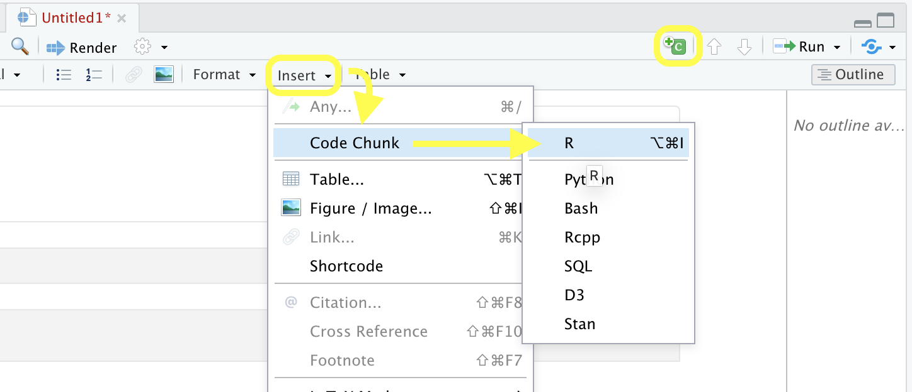
Tip: Four ways to insert code chunks
- the Add Chunk button in the editor toolbar (looks like a green square with a C)
- the Insert > Code Chunk menu option in the editor toolbar
- by typing the code chunk delimiters {r} and ```. *If you are in “editor” mode you will need to remember to end the code chunk with ending backticks as well ```.
- the keyboard shortcut - Ctrl + Alt + I (Windows) - Cmd + Option + I (Mac)
Basic Anatomy of a Code Chunk
The most basic (empty) code chunk looks like so:
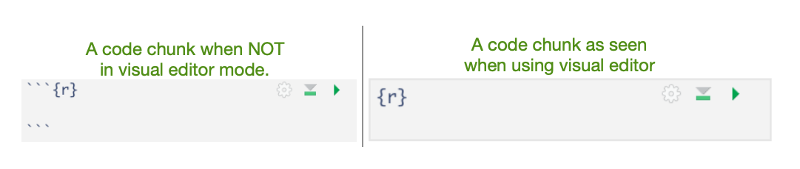
Other than backticks ``` for code chunks that surround the code top and bottom, the only required piece is the specified language (r) placed between the curly brackets. This indicates that the language to read the code is R.
Fun fact: Other Programming Languages
Although we will (mostly) be using R in this workshop, it’s possible to use other programming or markup languages. For example, we have seen that we can use LaTeX code for equations. You can also use python and a handful of other languages, so if R is not your preferred programming, but you like working in the RStudio environment, don’t despair! Other options for languages include: sql, julia, bash, and c, etc. It should be noted however, that some languages (like python) will require installing and loading additional packages.
Add the code to our Paper
Now, let’s open our 03_HR_analysis.R script in our code folder. We will insert the code of this script into our current working file. To do this, copy the code and paste it in-between the two lines with backticks and {r}.
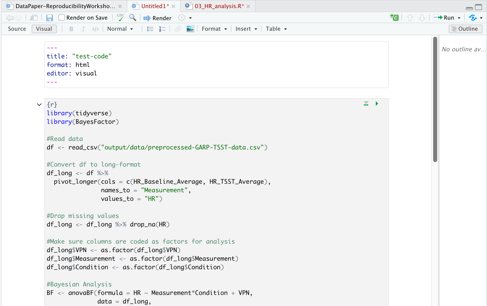
Run the code in a code chunk
Now, to check to make sure our code renders, we could click the “Render” button as we have been doing to check on the output of our Quarto file. However, with code chunks we have other options for running and debugging code that don’t require us to wait for the file to render.
1) Run from code chunk (green play button on the right top corner). This allows us to run one specific code chunk.
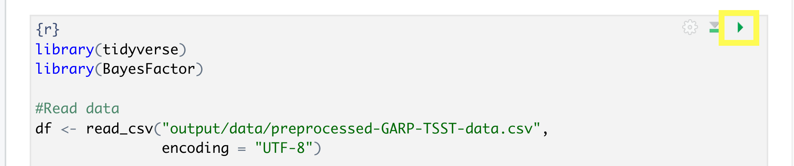
2) Run menu - this gives more options for running code chunks (chunks) including the current one, the next one, all chunks, etc.
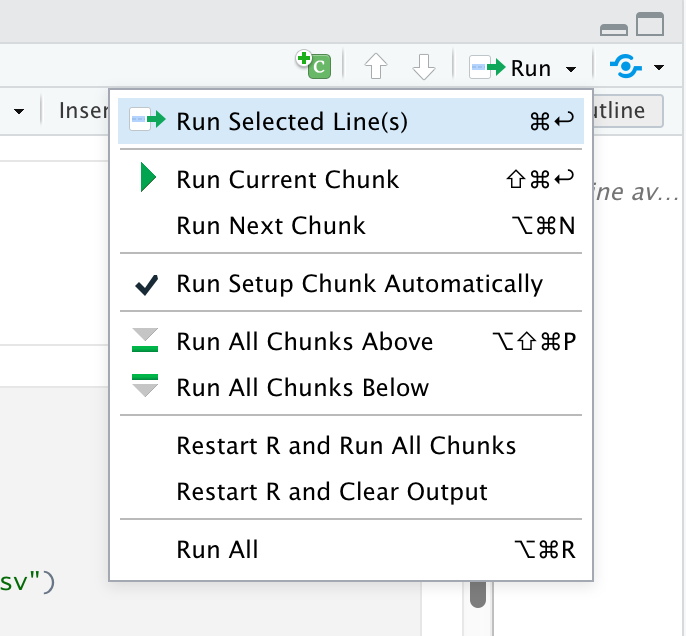
3) Keyboard shortcuts:
| Task | Windows & Linux | macOS |
|---|---|---|
| Create a code chunk | Ctrl + Alt + I | Cmd + Option + I |
| Run all chunks above | Ctrl+Alt+P | Command+Option+P |
| Run current chunk | Ctrl+Alt+C | Command+Option+C |
| Run current chunk | Ctrl+Shift+Enter | Command+Shift+Enter |
| Run next chunk | Ctrl+Alt+N | Command+Option+N |
| Run all chunks | Ctrl+Alt+R | Command+Option+R |
| Go to next chunk/title | Ctrl+PgDown | Command+PgDown |
| Go to previous chunk/title | Ctrl+PgUp | Command+PgUp |
Run your code with one of the given methods.
Well shoot! We’re getting an error:
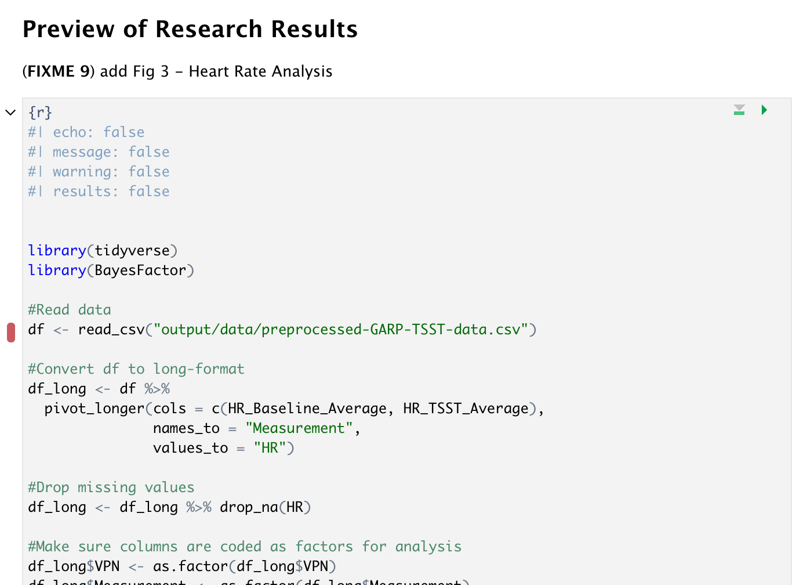
If we go to the bottom of the code chunk we’ll see more details on the error:
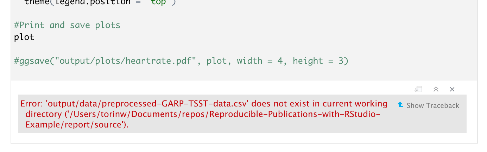
This is a path error. The reason we’re seeing this is that our paper is located in the report/source directory while our test document was automatically created in the project root directory. The path from the report/source directory to the data we’re trying to read is not correct any longer.
Fixing Relative Path Errors
We can fix this by adding the correct relative path:
df <- read_csv("../output/data/preprocessed-GARP-TSST-data.csv")
Instead of:
df <- read_csv("output/data/preprocessed-GARP-TSST-data.csv")
Run the code again to make sure it works properly.
Did it work? Look under the code chunk. You should now see a plot preview displayed beneath the code chunk if all went well.
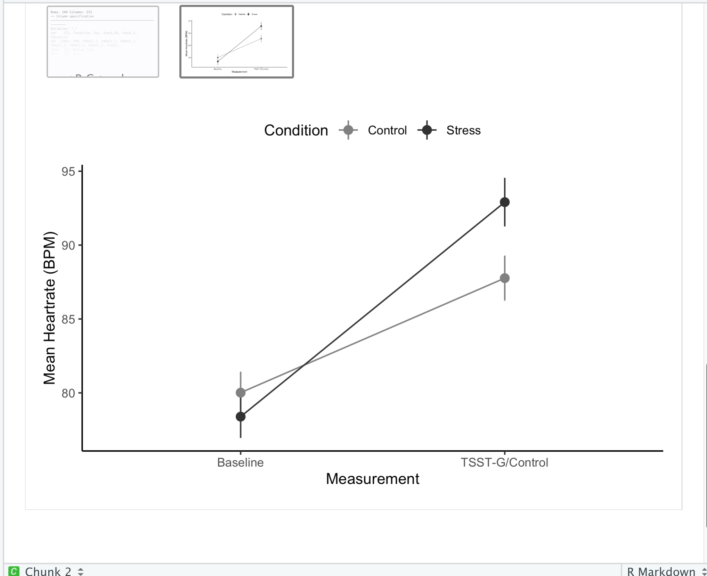
Rendering Code Chunks
We just saw how to run our code in our code chunks to test that it works and to see a preview of the code output that will render in our html document but to actually render the final we need to use the Render button as with. Using the Render button with code chunks is a two step process - first the code is run (all code chunks will run automatically). Second, (if there are no code errors) the document of choice will render for our whole Quarto document.
Time to Render!
Now, let’s Render the Quarto file and see how our code output looks in the final html page.
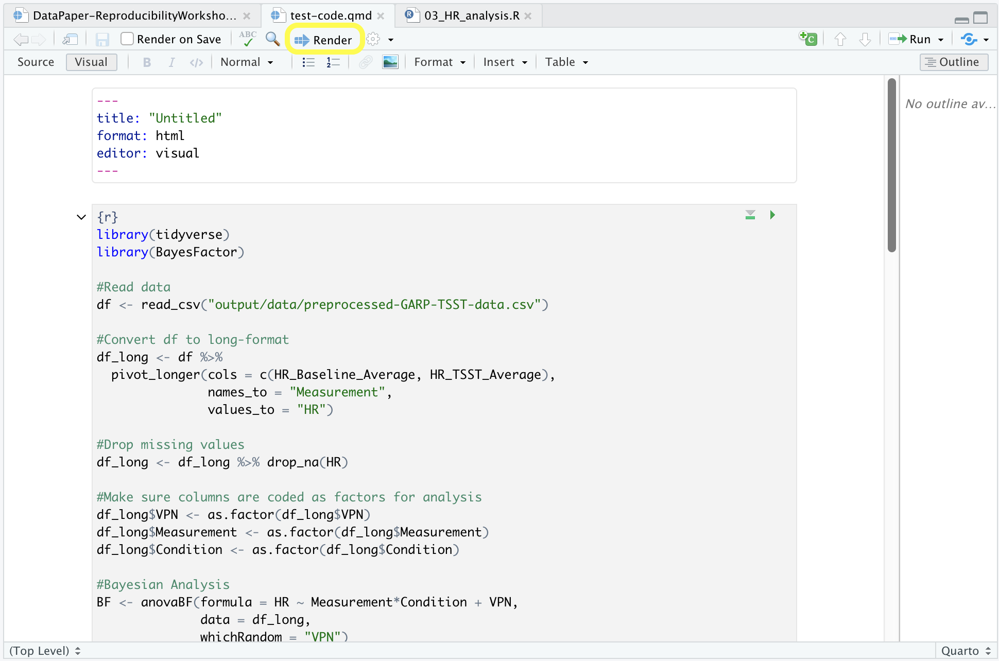
Wait… what’s all that output in our document? We don’t want that in our paper!
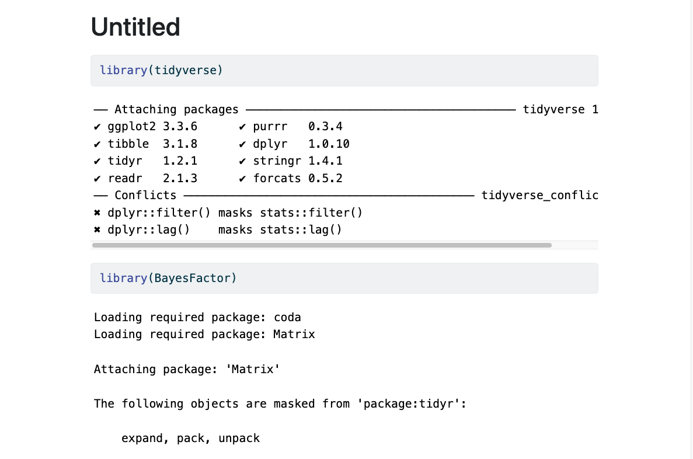
This happens because the output from running code (messages, results, warnings, etc.) get’s added to the Quarto document instead of being printed to the console. Let’s see about adjusting the output to make it look better with code chunk rendering options.
Code Chunk Options
There are over 50 different code chunk options!!! Obviously we will not go over all of them, but they fall into several larger categories including: code evaluation, text output, code style, cache options, plot output and animation. We’ll talk about a few options for code evaluation, text output and plot output specifically.
Code chunk options in Quarto are added within code chunks and always have the following format:
#| option: option-text
Common code chunk options:
include = (logical) whether to include the chunk output in the output document (defaults to TRUE).
eval = (logical or numeric) TRUE/FALSE to evaluate (or not) or a numeric value like c(1,3) (only evaluate expressions 1 and 3).
echo = (logical or numeric - following the same rules as above) whether to display source code or not.
results = (logical or character) text output of the code can be hidden (hide or FALSE), or delineated in a certain way (default ‘markup’).
warning = (logical) whether to display the warnings in the output (default TRUE). FALSE will output warnings to the console only.
message = (logical) whether or not to display messages that appear when running the code (default TRUE).
Using code chunk options for clean Quarto Documents
Ok, let’s use some of the options above to improve the look of our Quarto document. Add the following options one-by-one to see how they change your output (click Render after each option you add):
- echo: false
- message: false
- warning: false
- results: false
These options mean the source code will not be printed in the rendered html document, messages from the code will not be printed in the rendered html document, and warnings will not be printed in the html document (but will still output to the console). Plots, figures or whatever is printed by the code WILL show up in the final html document.
Now we are seeing what we would like: a figure without other output to show in our paper.
CHALLENGE 7.1 - Rendering Codes (optional)
How will some hypothetical code render given the following options?
{r} #| label: global-chunk-challenge #| eval: true #| include: falseSOLUTION
The expressions in the code chunk will be evaluated, but the outputed figures/plots will not be included in the rendered document.
When might you want to use this?
If you need to calculate some value or do something on your dataset for a further calucation or plot, but the output is not important to be included in your paper narrative.
Tip:
Find a complete list of code chunk options on Knitr developer, Yihui Xie’s, online guide to knitr.
Label Your Code Chunk
Before we get to fixing how our code output looks, let’s pause a second and give our code chunk a label. While not required for running your code, it is good practice is to give a name to each code chunk because a label is an unique identifier which allows for more advanced options (such as cross-referencing) to work with your qmd files later on:
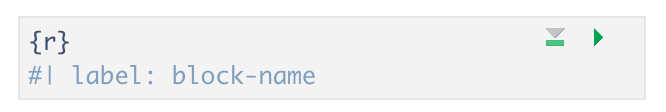
Some things to keep in mind
- The chunk label syntax is always
#| label: chunk-labelwithchunk-labelreplaced with your own text - The chunk label has to be unique (i.e. you can’t use the the same name for multiple chunks)
We’ll see in a bit where this code chunk label comes in handy. But, for now let’s go back and give our first code chunk a name:
#| label: fig3-heartrate
Tip: Don’t use spaces, periods or underscores in code chunk labels
Avoid spaces, periods
(.), and underscores(_)in chunk labels and paths. If you need separators, you are recommended to use hyphens(-)instead. For example, setup-options is a good label, whereas setup.options and chunk 1 are bad; fig.path = ‘figures/mcmc-‘ is a good path for figure output, and fig.path = ‘markov chain/monte carlo’ is bad. See more at: https://yihui.org/knitr/options/
Caption your code chunk output:
The options we just looked at focus on code evaluation and text output. However, we have another set of options that deal with how plot or figure outputs look at act. Many of the options start with fig. The one we will use today allows us to add a caption to our figure. Again, this is an optional feature, but if you need (or want) to add captions to your publication, it is straightforward to do in code chunks.
The caption information also resides at the top of a code chunk using the #| syntax as such:
#| fig.cap: "Figure Caption Here"
Don’t forget to put the caption within quotes "".
CHALLENGE 7.2: Add a caption to Figure 3
Let’s add a caption to our heartrate figure. Add the caption:
“Fig 3: Mean heart rate of stress and control groups at baseline and during intervention.”
SOLUTION
so, you should end up with the following in your code chunk:
{r} #| label: fig3-heartrate #| echo: false #| message: false #| warning: false #| results: false #| fig.cap: "Fig 3: Mean heart rate of stress and control groups at baseline and during intervention."Set the option
fig.capto equal the text in double quotes.
More plot/figure options
Other options that change how a plot or figure appears often use the sytax
fig.xxxsimilar tofig.capSome other useful plot/figure code options include (From Yihui Xie’s page ):
fig.width,fig.height: (both are 7; numeric) Width and height of the plot (in inches), to be used in the graphics device.out.width,out.height: (NULL; character) Width and height of the plot in the output document, which can be different with its physical fig.width and fig.height, i.e., plots can be scaled in the output document.fig.align: (‘default’; character) Alignment of figures in the output document. Possible values are default, left, right, and center. The default is not to make any alignment adjustments.fig.link: (NULL; character) A link to be added onto the figure.fig.alt: (NULL; character) The alternative text to be used in the alt attribute of thetags of figures in HTML output. By default, the chunk option fig.cap will be used as the alternative text if provided.
Let’s render one more time to see if our figure outputs how we’d like and has a caption.
Time to Render!
Let’s try that again
Inline Code
What if you only need to make a quick calculation and adding a code chunk seems a little overkill?
You can directly include code into the text portion of your document with inline code, for example:
There are ` r sum(1:14) ` cats in the neighbourhood
We’ve had to put an extra space between the backticks ` and the code to prevent it from rendering so you can understand how to write inline code. You can copy that line into the test-code.qmd document then remove the spaces. If we render the test-code.qmd document, what change do we see?
Say you are discussing some of the summary statistics in your manuscript, Quarto makes this possible through HTML/LaTeX inline code which allows you to calculate simple expressions integrated to your narrative. Inline code enables you to insert r code into your document to dynamically updated portions of your text. In other words, if your data set changes for any reason the code will automatically update the calculation specified.
This can be helpful when referring to specific variables on your data. For example, you should include numbers that are derived from the data as code not as numbers. Thus, rather than writing “The CSV file contains choice consistency data for 10.000 simulated participants” (Example 7) , replace the static number with a bit of code that, when evaluated, gives you a dynamic number if anything changes on your dataset. Note that there is not an insert option to do this from the menu in the visual editor, so we need to insert inline code manually with r, for example:
The CSV file contains choice consistency data for r nrow(bronars_simulation_data) simulated participants.
When you render you might get an error. Any idea why? That is because we need to make sure to import the dataset we are referring to before the inline code can work. Let’s add the following to our chunk at the beginning of the document where we loaded our other data:
bronars_simulation_data <- read_csv("data/bronars_simulation_data.csv")
Time to Render!
If you update your dataset this value will match the number of rows.
CHALLENGE 7.3 - Adding inline code
Suppose we would like to add some information to the sentence we have just adjusted in our manuscript. We would like to include the average for the variable violation_count present in the same dataset. Which inline code we would have to add to following sentence?
The CSV file contains choice consistency data for `
r nrow(bronars_simulation_data.csv)` simulated participants, that have been used to determine the power of our food-choice task design to detect choice consistency violations, which averaged `enter inline code here`. What inline code would you enter? What number would replace the inline code?Tip: we will need to use a
dataset$variablesyntax!Solution:
`
r mean(bronars_simulation_data$violation_count)` 5.3924
Important Note:
Make sure the file you are calling is in the right subdirectory and your working directory is set appropriately.
More on inline codes:
Quarto will always display the results of inline code, but not the code. Inline expressions do not take knitr options.
Time to Commit!
Now, let’s commit the changes you have made.
Key Points
Knitr will render your code and markdown-formatted text and output your document format of choice
Code chunks are runable piece of R code. Each time you render/knit the document, calculations and plots will be run and displayed
Options for code chunks can be set at the individual level or at the global level
Reproducible & Efficient Methods of Using Code Chunks
Overview
Teaching: 50 min
Exercises: 20 minQuestions
How can I enhance reproducibility amongst collaborators, present and future?
How do I run external scripts in an Quarto document?
How can I avoid issues with relative paths?
How can I get my Quarto document to render faster?
What is inline code and when to use it?
Objectives
Learn how to use renv in an RStudio project
Learn how to source external scripts to run within an qmd document to modularize your code.
Learn about using global knitr options to change your
.qmdfile’s working directory.Learn how to load libraries and data for use throughout the whole
.qmddocument.Learn the syntax for inline code.
Reproducible Methods for Coding in Quarto
Now that we’ve learned the core benefit of using Quarto documents - the integration of code with text - let’s learn some next level methods of working with code in Quarto. We’ll cover how to use virtual environments with renv, how to add Global Knitr options to the yaml, run external R scripts from within the Quarto document, setting the working directory for the Quarto document and loading packages and data globally. Whew! that’s a lot! Let’s dig in.
Enhancing reproducibility with renv
renv is an R package that keeps track of your project’s dependencies, specifically, the version of the R interpreter your project is using and the versions of any packages referenced by your R scripts. renv can also download and install package versions according to a project’s requirements. This makes it easy for a downstream user to run an R project in the same environment in which it was originally developed.
In our workshop project, renv has already been set up— you can tell by the presence of a file renv.lock in the project’s root directory. This file records package versions and other information.
Every time you open a project for which renv has been set up, renv automatically runs and checks that the package versions you have installed on your computer match those of the project. If they match, there is nothing to do (perhaps that was the case for you today). But if there are any mismatches (as might have happened to you today), renv will print a warning resembling the following:
* Project '~/Desktop/myproject' loaded. [renv 0.16.0]
* The project library is out of sync with the lockfile.
* Use `renv::restore()` to install packages recorded in the lockfile.
If this happens, simply run renv::restore() from the console pane to download and install the package versions needed to match the project’s requirements. For example, if the project uses tidyverse 1.3.2 and you have an older version tidyverse 1.3.1 installed on your computer, renv will upgrade your RStudio installation to tidyverse 1.3.2. (This works conversely as well: if the project uses an older version of a package you have installed, renv will attempt to download and install the older version for you. Don’t worry about losing the newer version. renv ensures that all versions of all packages remain installed on your computer, available to be used by projects as needed.)
A few more points on using renv. To start using renv on a new project, run these commands in the console pane:
install.packages("renv")
library(renv)
renv::init()
This creates the initial renv.lock file. Then, whenever you start using a new package (or otherwise change your project’s dependencies), run renv::snapshot() to update the lockfile. Finally, if you are using git and start using renv, you will notice that renv creates several files and directories in addition to renv.lock. For reproducibility, be sure to commit the renv.lock file, and also .Rprofile and renv/activate.R.
Global Quarto Options
We’ve seen that we have pretty fine-tuned control of how our code output looks in our document using code chunk options. Now, let’s learn how to take those controls to the next level by learning how to apply them “globally” over our whole document or even all the documents in your project.
What are some of features of global knitr options? There are many, but we’ll cover several of the most relevant and useful ones here:
- Set global options for code chunks so we don’t have to repeat them in each chunk
- Set working directory so file paths (for code chunks) are easier to work with
- Load libraries and data once at the beginning of the document instead of in each code chunk (more concise and less rendering time)
Project level vs Document level settings
With Quarto we have the functionality and flexibility of being able to define project level global settings in addition to document level settings. This means that the settings we choose will be applied to either one specific Quarto document or all Quarto documents within our R project.
How do we use document level settings?. How do we edit project level settings? That’s where the yaml at the top of our documents and/or the _quarto.yml file that lives in our project root directory comes in.
At the top of our .Qmd document we see the yaml:
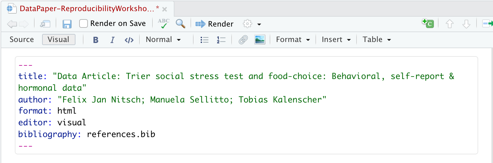
Opening the _quarto.yml file in our project root we see the following default settings:
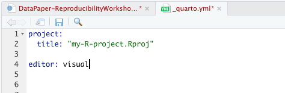
Project and Document settings Hierarchy
Similar to CSS, Quarto uses a cascading style of options. Starting from the project-level _quarto.yml document, Quarto gathers all specified options ending with the document-level options. All are combined and applied to the specific Quarto document. If there are any options that differ between the documents, the more specific option wins - i.e. the document-level option will be applied.
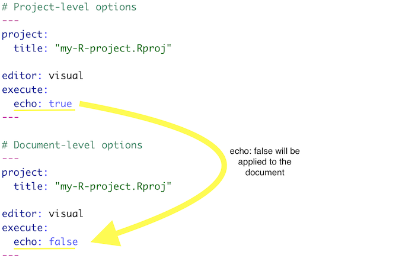
Document level setting
Global Code Chunk Options:
There is an option to globally set options for the entire Quarto document rather than have to specify in each code chunk. This is helpful when you consistently want to use the same options and when you have many code chunks within a document. Additionally, adding global code options will allow you and collaborators to have a better idea of how you’ve configured your document.
In Quarto, the way to configure global code chunk options is in the yaml header.
In the yaml header of our document we can set global options with execute.
~~~
...
execute:
echo: false
~~~
Additional options can be further nested under execute.
Let’s see how it looks in our paper to add the options from our first code chunk:

Tip: R Markdown global options syntax works in Quarto
If you’ve previously used R Markdown and have old documents or don’t want to learn a new workflow quite yet, Quarto is backwards compatible with R Markdown, so you may also use the old
chunk$setsyntax as below: 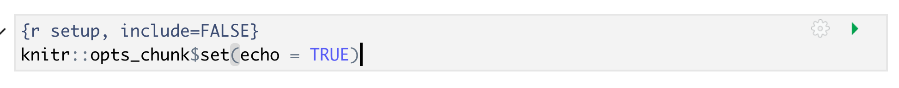
Tip: Overiding global options
What if you want most of your code chunks to render with the same options (i.e. echo: false), but you just have one or two chunks that you want to tweak the options on (i.e. display code with echo: true)? Good news! The global options can be overwritten on a case by case basis in each individual code chunk. Test this by adding
#| echo: trueto your code chunk in your document and rendering. Did you override the global settings successfully?
Challenge 8.1 (optional) global & individual code chunk options
How would appear in our html document if we render a code chunk with the following options?
{r} #| warning: true #| echo: true ...…considering the global chunk settings were as listed:
~~~ execute: echo: false include: false ~~~SOLUTION
In this case, the global settings are set so neither the code nor the output will display. However, the individual chunk reverses the echo setting so the code will display, and it also indicates that any warnings the code renders should output too. The outputs of the code would still not be displayed (include: false) The hypothetical situation for this configuration may be for debugging while writing the qmd document.
Project level settings
Set working directory to project directory:
Ok, so you know how we had to change the file path in the code chunk we copied into our document so that the relative path was correct for reading in data? This happened because in Quarto documents, the working directory is wherever the qmd document is located but our code is located in a different folder. This means they have different relative paths to locate and read the data we want to work with. We can simplify things by designating the working directory for our document relative to the root project directory instead. What this does is let all files work relative to the project root instead of each other, standardizing the relative paths. Note that this is mainly important for code chunks - text portions of Quarto documents are not affected. This will clear up some of our confusion with relative paths across our whole R project.
So one should learn how to accomplish that by changing the working directory at the project level yaml settings. So we’ll navigate to our _quarto.yml document in our root project directory and open it.
We’ll add the following settings to the yml file:
...
project:
execute-dir: project
...
So the yml file should now look something like this:
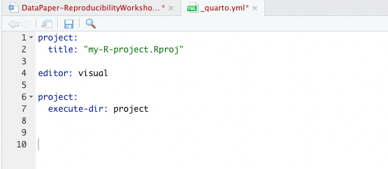
Note: R Markdown method for setting working directory also works in Quarto
Again, all R Markdown syntax is backward compatible with Quarto so it is possible to use the “old” method to set the working directory. This would be the workaround to set the working directory if you don’t wish to use the Quarto project
_quarto.ymlfile.To simplify it further, one can use the
herepackage available in RStudio.This is a setting option in global knitr settings. The following code would be used in a code chunk at the top of your Quarto document:
knitr::opts_knit$set(root.dir = here::here())
Now, we would change the relative path in our code chunk back to what it was before, but let’s hold tight. We’re going to introduce another way to run code! But first, let’s see how to globally load data and packages.
Note: Changing the working directory only applies to code
Setting the working directory to the project directory we just did adjusts the working directory for all code in the Quarto document (code chunks and inline code), but NOT for any markdown text elements (images and hyperlinks).
Tip: Yaml chunk options
We can also tweak some settings in our yaml which changes how code chunks are displayed. We’re not going to get into this in the workshop, but many of the same options you set in your global code chunk settings are also configurable in the yaml.
Code improvements
Globally load data and packages
We can improve organization and rendering speed in our documents by learning how to globally load data and packages. So far we’ve loaded the library tidyverse and the data frame df we need in the first code chunk. Now if we want to add another figure (say the hormone analysis code ‘02_hormone_analysis.r`), which uses the same data as our first figure - we would be loading tidyverse and the data for a second time. This is unnecessary because once libraries and data are loaded in a Quarto document they are available for use in the rest of the code in the document following.
Best practice is to load libraries and data once at the beginning of our document making it available for all other figures or calculations throughout the document - allowing us to avoid repetition in our code and saving us rendering time. This also makes it easier for us to keep track of all the libraries and data we need to use in any given document for ourselves and collaborators. If anything needs to be tweaked, we don’t need to search through every code chunk in our qmd document to make a change - it’s listed right at the top.
# load libraries
library(tidyverse)
library(BayesFactor)
library(patchwork)
# load data
df <- read_csv("./output/data/preprocessed-GARP-TSST-data.csv")
Challenge 8.2: Order matters (optional)
What would happen if we loaded the data before we loaded the libraries? Try it out!
Solution:
We would get an error because we haven’t loaded tidyverse yet! 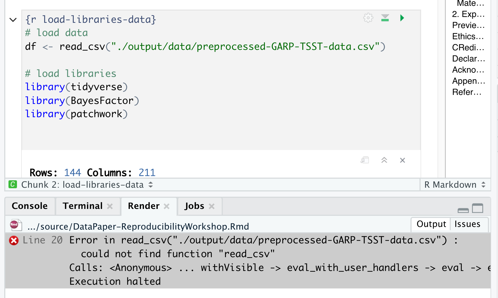
At this point we could go back through our R scripts and comment out (or delete) the beginning sections where we load the data and libraries (you will see this is already done in most of the scripts in the code folder). You can imagine that the more code chunks you have the more time taking this step would save. Bonus that this also works to load the data before it is called in inline code as well!
Run Code from an external script in a code chunk
Let’s learn another technique for adding code-generated plots and figures into our document. This time around let’s see how to run code in a code chunk from an external R script instead of somewhat awkwardly copying and pasting the code from a R script to a code chunk in our .qmd.
There are at least a few benefits to running code in this modular fashion instead of copy/pasting:
-
Automatic updates: if the code gets updated in the R script, it will automatically be updated in the Quarto document as well. We won’t need to copy/paste code updates, which would make it easy to end up with discrepancies between our
.rscripts and our.qmdpaper. -
Readability: calling code externally only takes several lines of code - versus copy/pasting 50+ lines of code from our scripts.
-
Less fussing with relative paths* - we had to change the code slightly in the first example to update the file path to the data set, which introduces variations and inconsistencies. With this method we won’t have to modify the source code.
*unfortunately you will never be free of relative paths, but you can make it a bit easier on yourself.
Again, let’s test this out in our generic Quarto document. After our first figure add a new code chunk:
We’re just going to test out the same figure again so we can verify this new method works. So in the heart rate anlysis code chunk, delete the existing code and add the following instead:
# run the code from 03_HR_analysis.R in the code directory
source("code/03_HR_analysis.R", local = knitr::knit_global())
# display the plot created by code in 03_HR_analysis.R
plot
Add the code to our Quarto document
First, find Example 8 in the Quarto document for Fig 3 (ctrl-f “Example 8”).
Add the following code where Example 8 is located under “Preview of Research Results”.
# run the code from 03_HR_analysis.R in the code directory
source("code/03_HR_analysis.R", local = knitr::knit_global())
# display the plot created by code in 03_HR_analysis.R
plot
It should look like this:
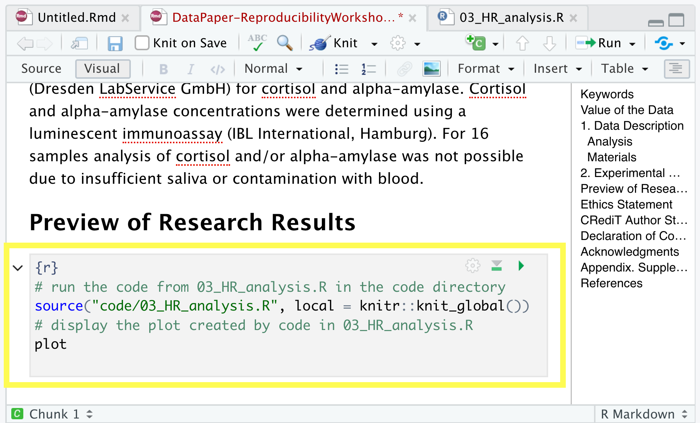
DON’T forget to add chunk name and caption for Figure 3 (we can use the same name and caption as before). Remember we don’t need to add options since we defined them globally.
Time to Run!
Let’s see if our code worked when generated from an external script
Time to Render!
If the code ran without error, let’s render the whole document again and take a look.
Our plot should look exactly the same as the first copy-pasted one.
Success! And you’ll notice that the global code chunk options were applied to this code chunk as well*.
- Note: As of November 2022, Quarto has not implemented global options for
results. This will need to be added to each code chunk if needed until further notice.
Tip: Many ways to run external code
There are at least 3-4 methods one can use to run external code, the best choice may just depend on the context or on your personal preference. There’s no method that’s a clear winner, because there’s an awkward quirk or another to each of them, but better than copy/pasting code from elsewhere in your project (in our humble opinion):
- source() – see more at bookdown.org
- sys.source() – see more at bookdown.org
- knitr::read_chunk() – see more at stackoverflow
Challenge 8.3: Your turn! Create Figure 4 with the external code
First, find
Example 9in the qmd document for Fig 4 (ctrl-f “Example 9”). We need to add the code for the hormone analysis.Make sure to give the code chunk a name:
fig4-hormonesand a caption:"Fig 4: Cortisol and Amylase levels in stress and control groups"Solution:
{r} #| label: fig4-hormones #| fig.cap: "Fig 4: Cortisol and Amylase levels in stress and control groups" # run the code from 02_hormone_analysis.R in the code directory source("code/02_hormone_analysis.R", local = knitr::knit_global()) # display the plot created by code in 02_hormone_analysis.R plot
Time to Commit!
Now, let’s commit the changes you have made.
Key Points
renv is a handy tool for capturing your project’s package dependencies
Learn how to externally source code
source()Learn how to modularize your code to make it more reproducible
There are options for changing the working directory of your
.qmddocument with packagerprojrootUse a chunk at the beginning of your document to load libraries and data globally to make your document more efficient.
Bibliography, Citations & Cross-Referencing
Overview
Teaching: 25 min
Exercises: 10 minQuestions
How can you insert citations to your manuscripts using RStudio’s visual editor?
How can you change citation styles?
What are the options to display cited and uncited bibliography?
How can you cross-reference content?
Objectives
Inserting citations and listing bibliography in an Quarto Document file.
Changing citation styles.
Customizing how citations and bibliography are displayed.
Add cross-referencing directing your readers through your document.
Why citing?
Correctly citing and attributing publications is key to academic writing. Older versions of RStudio require Pandoc’s citation syntax to render bibliographies correctly. We won’t be covering this approach extensively in this workshop, since the new visual editor has made this process much more simple. You can refer to our previous workshop on R Markdown pre-visual editor for more information.
The new visual editor has made citations and cross-referencing much easier, by offering different options for referencing various types of sources. Before getting into these different features, let’s first learn how you can call the citation window dialog on Rstudio and how to navigate these different options.
Calling Citation Options on Rstudio
After placing your cursor where you want to insert the citation you can either click the @ icon in the toolbar, or select Insert, and from the drop down menu choose Citation. Alternatively you can use the keyboard shortcut ⇧⌘ F8 on Mac, or Ctrl+Shift+F8 for Windows.
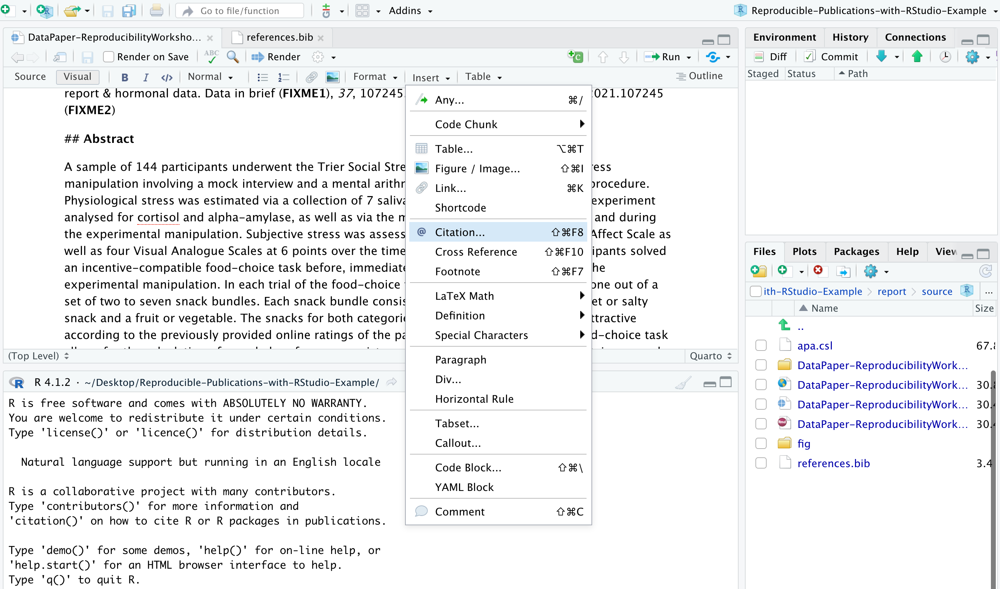
The citation window will display different options for inserting citations, You can either find items listed in your own sources through your Bibliography folder (you should have one already in your project folder provided by us), your Zotero Library(ies) if you have the reference manager installed in your computer, or even use the lookup feature to search for publications by DOI (Digital Object Identifier), Crossref, DataCite, or PubMed ID as we will explore a bit more shortly.
Understanding How Rstudio Stores and Organizes Citations
Have you noticed that the YAML header contains “bibliography: references.bib”. Any idea why? Well, that’s because on our paper template we have some existing citations, and a references.bib file in our project folder. Rstudio adds that automatically to the YAML once you cite the first item to your manuscript. But let’s first open the references.bib file (located in report>source on your project folder) and understand how citations are presented there:
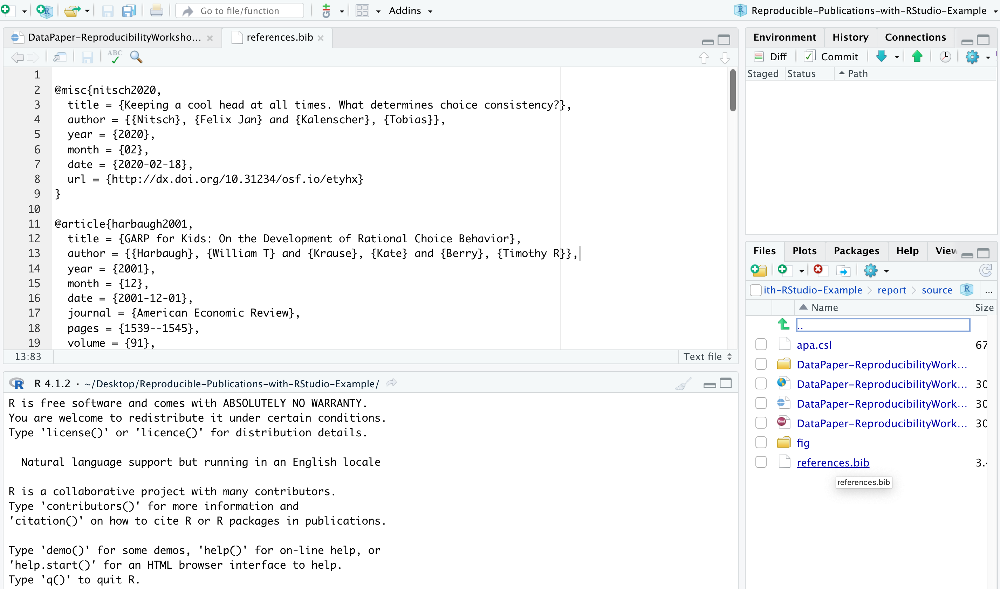
A file with the BIB file extension is a BibTeX Bibliographical Database file. It’s a specially formatted text file that lists references pertaining to a particular source of information. They’re normally seen only with the .BIB file extension but might instead use .BIBTEX. BibTeX files might hold references for things like research papers, articles, books, etc. Included within the file is often an author name, year, title, page number, and other related content. Each item can be edited, in case there is any metadata incorrect or missing.
Most citation and reference management tools such as Refworks, Endnote, Mendeley and Zotero, as well as some search engines (e.g. Google Scholar), most scientific databases, and our UCSB library catalog allow us to export citations as .bib BibteX files. These files are used to describe and process lists of references, mostly in conjunction with LaTeX documents. Each .bib file has a citation key or ID preceded by an @, which uniquely identifies each item. Citation keys can be customized as we will learn in a bit, but be advised that your manuscript will render citations correctly only if you have the cited item corresponding to its exact key.
Inserting Citations
Note that we have different blocks in this file starting with a @ and ending with a curly bracket {, each one representing a unique citable source. We will be adding now a new item using the DOI lookup function so that you can see how the magic works!
Let’s assume you want to include a citation in the first line of the Value of the Data section, because you would like to provide some reference of how the salivary cortisol technique has been used in research. So let’s click where we want to insert the citation, call the citation function and lookup for the following DOI: https://doi.org/10.1016/B978-012373947-6.00334-2
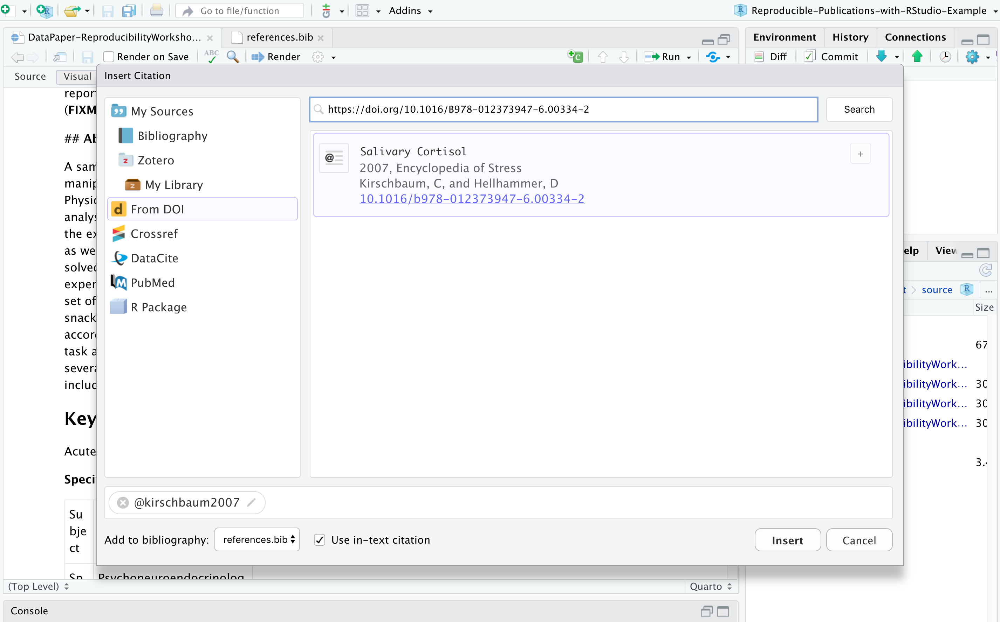
The DOI lookup uses the persistent identifier which connects to the DOI resolver service and retrieves the .bibtex file with resource metadata1. You should insert the whole DOI address, including the resolver service, the prefix and the suffix which is specific to the resource as illustrated below:

Rstudio will search the DOI API and list the only matching result and you can insert it. After confirming this is the citation you would like to include, you can modify the key, if you would like to simplify it, and also choose if you would like to insert it as a in-text citation, meaning you would like to have the last name of the author(s) followed by a page number enclosed in parentheses. i.e., Kirschbaum and Hellhammer (2007), but in this case, we will uncheck that option since we won’t include authors as part of the narrative. Instead we would like to insert a parenthetical citation, where authors and year will be displayed inside the parentheses such as (Kirschbaum and Hellhammer 2007). You may insert more than one citation by selecting multiple items.
This item will be automatically listed in your references.bib file and will help you manage your citations more efficiently. Pretty cool, huh? If you want to cite this same item again you can type @ and the first letters of the item name which will be auto-completed by Rstudio. For parenthetical citations you will have to type the key between brackets and for in-text narrative citations, you only need to type in the key.
Note that when you hover over the citation, you will preview the full reference for the cited item that will be listed at the bottom of the manuscript. This feature helps you to identify if you have to edit anything in the .bib file your citation is calling. Also, note that all citations will be included at the end of your document under a reference list.
Challenge 9.1 - Insert a Citation Using the DOI Lookup Function
Following the same process described, insert a parenthetical citation to the publication “Welcome to the tidyverse” (https://doi.org/10.21105/joss.01686) where there is a mention to this package in the data paper. Look for:
add citation hereSolution
[@wickham2019] render the document and voiala! (Wickham et al., 2019)
Inserting citations using Crossref, DataCite or PubMed follows a very similar process to the DOI process, however; to search on their APIs you will need to input information accordingly. For Crossref, you may use keywords and author information to identify an item (e.g., Cortisol Stress Oken) and Rstudio will connect to Crossref search and provide related results, often not as specific as the DOI search, for cases you know exactly what you are looking for. DataCite allows searches by persistent identifiers or keywords, while PubMed searches exclusively in biomedical literature indexed in the database. If you have the PMID (PubMed reference number), which is uniquely assigned by the NIH National Library of Medicine to papers indexed in PubMed, similarly to the DOI search, it will save you time.
Editing Metadata & Citation Key
Not all citations are in perfect shape when we import them. You may have to adjust them (e.g., include missing metadata, move content to another metadata field). If needed, we can do so by modifying the .bib file. As briefly mentioned, you can also edit citation keys. By default, most citation keys will have the first author last name or the first word of the title (if no authors), followed by the year of publication. You may consider editing the citation key in case you want to simplify the entry and speed up the autocomplete option. If you choose to do so, you can simply click on the key in the .bib file and edit it. Please be advised to use this option with caution, and to update citations to match the .bib file.
Changing Citation Styles
You might have noticed that all citations are inserted in a specific style. Can you guess which one? If you answered Chicago, that is correct! By default, Rstudio uses a Chicago author-date format for citations and references. To use another style, you will need to specify a CSL (Citation Style Language) file in the csl metadata field in the YAML.
But how can you identify which CSL you should use? You can find required formats on the Zotero Style Repository, which makes it easy to search for and download your desired style.
Download the format you wish to use and call it out in the YAML. We have pre-saved the APA CSL file in the project folder for you. But if you would like to follow the process or try another style, go to the Zotero Style repo and select American Psychological Association 7th edition or any other style of your choice. You will notice that it will automatically download the file (e.g. apa.csl). Make sure to save it to your project directory in report/source folder. In the YAML we have to call the exact name of the file preceded by “csl:”
csl: apa.csl
Save and render the document to see how citations and references have changed. This same process could be followed for any citation style required by the university, the journal or conference you are planning to submit your manuscript to.
Challenge 9.2 - Changing the Citation Style
How can you go back to using Chicago Style?
Solution:
You can either delete the csl information as it is set as the default, or call it in the YAML:
csl: chicago.csl
Adding Items to the References without Citing them
All cited items will be listed under the section References which you created before while practicing headings and subheadings. Items will be placed automatically in alphabetical order for most citation styles. However, there might be cases that you will be referencing supporting literature which you have not necessarily cited in the document.
By default, the bibliography will only display items that are directly referenced in the document. If you want to include items in the bibliography without actually citing them in the body text, you can define a dummy nocite metadata field in the YAML and put the citations there.
nocite: |
@item1, @item2
To demonstrate that let’s include the bibtex @key for an item that was not cited in the YAML. Note that this will force all items added in the YAML with this command to be listed in the bibliography.
Let’s try!
Challenge 9.3 - Adding references you have not cited
We have used a few packages in our paper that we do not necessarily cite in text. However, it is a good practice to add them to the reference list. This practice is recommended for giving proper credit to package developers and also to inform your readers about the exact version you have used to produce your paper.
Ideally we would follow this process for all packages we have installed and used to produce the paper. But for the sake of time, let’s do that process for the stringi package only.
1) First, you would go to the CRAN page for stringi, click on citation info link and copy the corresponding BibTeX entry. 2) Paste the bibtex into the “references.bib” file, and ensure the new entry has the key stringi2022.
Now that you have the citation info and know the key for the package is @stringi2022, how would you go about to add this bibliography as a no-cite?
Solution
You should specify @stringi2022 in the nocite section of the YAML header:
nocite: | @stringi2022
Important Info:
Does the indentation matter? Yes, you have to indent at least one space and the citation key should turn green to work.
In case you are including a citation tonocitethat you have not cited in the document, you have to make sure first that the bib file is in your Bibliography folder.
Tip:
Depending on the bibliography style, BibTeX converts all characters in the title to lowercase, except for the first character. If you want to override this, wrap the character(s) you wish to show in upper case, in curly braces.
title = "Pascal, {C}, {Java}: were they all conceived in {ETH}?"
Adding Cross-referencing
Cross-referencing is a useful way of directing your readers through your document, and it can be accomplished in Quarto. You may create cross-references to figures, tables, equations, sections, code listings, theorems, proofs, and more.
Essentially, every cross-referenceable entity requires a caption (description), the object info, and a label (unique identifier. Let’s say we want to cross-reference Figure 1 in the paper. To do so, we will need to first create an id for it. If we are in the visual mode, we can double click the image, click the “Attributes” tab, and enter #fig1 as the ID.
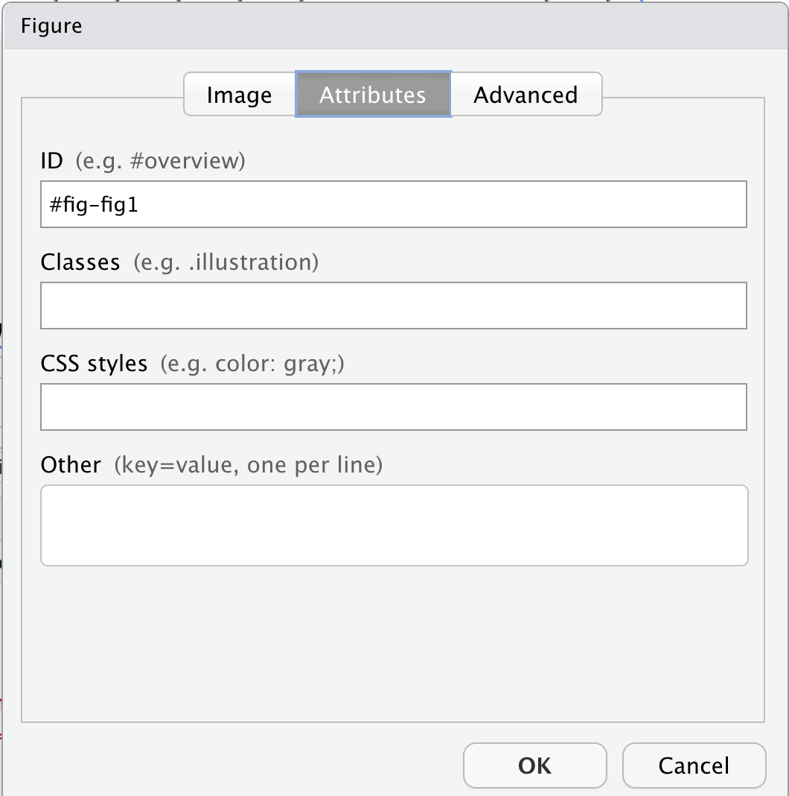
Alternatively, in the source mode, we can enter that same ID in front of the figure name, by typing in {#fig-fig1}
{#fig-fig1}
Ok, but how can you call that in another part of the paper? You may enter the key below using the unique identifier, but instead of the hash # it should be preceeded by an at @:
@fig-fig1
If you do not start you label with fig-, Quarto will interpret it as a citation and won’t render correctly. Click Render and see how it displays.
You may follow a similar approach to add cross-references for sections (#sec-)/(@sec-), equations (#eq-)/(@eq-) and tables (#tbl-)/(@tbl-). For more information on how to cross-reference different types of objects, visit Quarto - Cross References.
If you wish to add a cross-reference to a figure that was generated via code block, you have to provide a label (id) and a caption at the beggining of the figure code block.
` #| label: fig-id #| fig-cap: “figure caption here” ` And then, enter the @fig-id where you want to note the cross-referece in your paper.
Challenge 9.4 - Adding cross-reference for code block figures
Your turn! Include a cross-reference to Figure 3. In a previous lesson we added a caption for figure 3:
fig-cap = "Fig 3: Mean heart rate of stress and control groups at baseline and during intervention.. How we would have to tweek that a bit to make the cross-referencing render correctly?Solution:
1) Add a label (id) e.g.
#| label: fig-fig32) Make sure the caption is correctly represented#| fig-cap: "Fig 3: Mean heart rate of stress and control groups at baseline and during intervention"3) Call the figure using the assigned id@fig-fig3FIXME: Add screenshot
Time to Commit!
Make sure to commit your changes with Git. Add your changed files and commit with the following message: “Added Bibliography”
Key Points
Rstudio supports different lookups strategies to easy the citation process.
Rstudio supports different citation styles.
The YAML can be ajusted to display uncited items in the reference list.
Use bookdown to cross-reference content.
Collaborating via Github
Overview
Teaching: 15 min
Exercises: 10 minQuestions
How do I authenticate with Github?
How do I put my project on Github?
How do I "push" my latest changes to Github ?
Objectives
Authenticate with Github.
Connecting your project to Github.
Make changes locally and push them to Github.
In episode 5 we learned about using version control as you write your publication. In this part of the workshop we’ll setup Rstudio to authenticate with Github which is necessary to push your changes to Github.
Terminology: Git Push and Pull
Definition: The process of syncronizing your local git repository with your git repository on Github (or other Git server).
Github used to allow simple Username & Password authentication but now Github requires a more secure method of authentication. For this workshop we’ll be using the Personal Access Token method. The Personal Access Token (PAT) must be created for your account on github. You’ll use the PAT to authenticate instead of your Github account password.
- Login to your Github account with your web browser. https://github.com
- On Github.com go to your account setting -> Developer Settings -> Personal access tokens or this link: https://github.com/settings/tokens
- Any tokens you have created in the past will be listed there and you can click “Generate new token” button. Set an expiration date for your new token and a scope. For this workshop the “Repo” scope should be sufficient. Then Generate your new Token with the button at the bottom of the page.

- On the next screen github shows you the new token. Be sure to copy it as you only get one chance to see the token text.
Note:
If you cloned the repository from Github in Episode 5 the next 2 steps are not necessary as the “origin” is set as part of the cloning process.
Getting your repository’s URL from Github
You can get the address of your repository from Github by navigating to your repository on Github.com and clicking the green “Code” button.
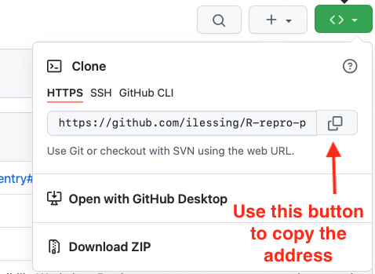
With that address you can complete setting the origin URL in the next step.
Checking and Setting the “Origin” for the local copy of your repository.
If you forked and cloned the demonstration publication for this workshop as covered in an earlier episode then your copy of the repository should already have the “origin” set. Once the “origin” is set properly you should be able to push and pull your changes to and from Github. When you clone a repository from Github your local copy of the repository should have Github set as the “origin”.
You can check this in Rstudio –> Tools –> Project Options –> Git/SVN
If the “Origin” field is blank then you’ll need to add it from the terminal with a couple of terminal commands like this:
git remote add origin <paste your repository address here>
git fetch --set-upstream origin main
Be sure your Github username is part of the URL.
After you’ve updated the Origin URL from the command line go back to R Studio –> Tools –> Project Options –> Git/SVN to verify you have the “Origin” field filled in. It should look like this.

Push your local changes up to your repository Github.
With authentication set up and your local copy of your repository pointing to Github as the “Origin” you should be able to make changes locally and push them up to Github.
When you are prompted enter your Github username and then paste in your Personal Access Token (PAT) when prompted for your github password.
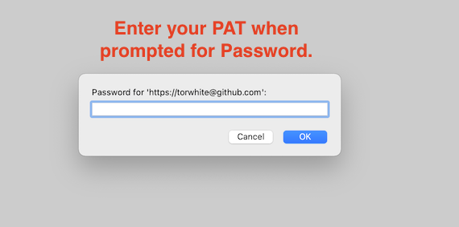
Let’s try it and see if it works.
Challenge: Push to Github
- Make a change to one of the files in your project or add a new file.
- In R Studio’s Git panel check the box to Stage the changed file.
- Commit the change to your Git repository.
- Click the green up arrow to Push you repository changes up to Github.
- Look on Github.com to verify your changes are there.
With the ability to synchronize your changes between Github and your local the next step is explore options for publishing your research paper.
Key Points
Setting up R Studio to authenticate with Github using a Personal Authentication Token (PAT).
Setting the Git repository Origin in your R Studio project enables pushing and pulling from your local copy of the repository to the repository on Github.
Publishing your project
Overview
Teaching: 10 min
Exercises: 0 minQuestions
What are the options for you to publish your project?
What free and open publishing resources are available?
What aspects should guide your choice?
Objectives
Identify different ways you can publish your project.
Overview of some free and open resources available.
Learn which factors should guide your decision-making process.
What is Next?
Once you have completed your Quarto manuscript following all the best practices for reproducibility, including organizing your project files, what is next? The answer depends on your plans to move forward. Let’s explore some scenarios:
If you plan to share your insights with your community right away
Publishing with Rpubs
- The easiest way would be to use Rpubs, which is integrated with Rstudio. Rpubs is a bare-bones, free web hosting service created for the sole purpose of hosting R Markdown documents. It provides no other services— no support for search, collaboration, persistent identifers, or versioning. But, it is the simplest and most direct way of getting your R Markdown (and now Quarto) document published on the web directly from RStudio. For a more full-featured hosting service consider GitHub and GitHub Pages, described later.
Notice the circular blue “Publish” button in the upper right corner of your Render output. Click this to publish to Rpubs. This is where you’ll need an Rpubs account as mentioned in setup for this workshop.
Click the blue publish button
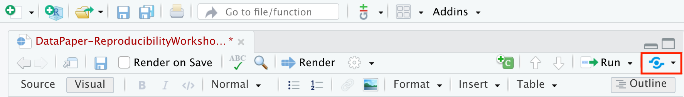
If you click on the carrot, you might get the warning below:
** Installing R Package Dependencies for Publishing: 'packrat', 'rsconnect', 'markdown'
[1/3] Installing packrat...
Wait for the installation to be completed. If a little menu pops up, select “Publish Document…” and you’ll be presented with the following panels:

(The other option in the dialog box, RStudio Connect, is a standalone publishing platform for teams to share content. It requires purchase to host and use.)

The first time you publish, RStudio will likely ask if you want to install some needed packages; say yes. RStudio will then open up a web browser to allow you sign in to rpubs.com.
At the end of the publish process your paper will be live on the internet
with a URL similar to: https://rpubs.com/yourname/678624
RStudio also saves an HTML version of your knit document to your local file system. Look for it in the same directory as the Quarto file in your R-Studio project directory. This html document is self-contained and highly portable. Images are encoded directly into the HTML so you can easily move it to any web hosting you have available.
Publishing with Quarto Pub
Quarto Pub is a free publishing service ideal for publishing blogs, course or project websites, books, presentations, and personal hobby sites developed in Quarto. All documents and sites published to Quarto Pub are publicly visible, so be mindful you should only publish content you wish to share publicly. Also, there is a limit of 100 MB per publication and a soft limit of 10 GB per month.
There are two approaches to publish content to Quarto Pub:
- Use the
quarto publish commandto publish content rendered on your local machine
or
- If you are using GitHub, you can use a GitHub Action to automatically render your project and publish the resulting content whenever your code changes.
As we are getting started we will cover briefly only the first approach. If you’d like to explore the second option, check Quarto Pub’s documentation.
Publish Command
- From the directory where your project is located, execute the quarto publish command for Quarto Pub, type:
quarto publish quarto-pub your-document.qmd
In our case, that would be quarto publish quarto-pub DataPaper-ReproducibilityWorkshop.qmd. But wait, first we have to ensure we are using the right path to call the document which is in the report folder. So, we can type in the terminal cd report before proceeding.
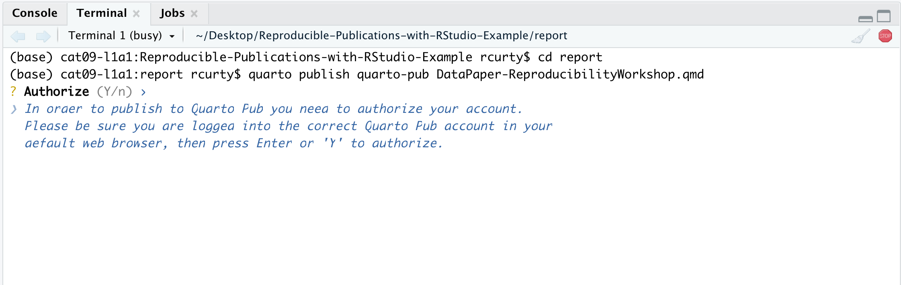
-
As it is our first time publishing in Quarto Pub the command above will prompt you to authenticate. We will need to confirm the authorization and create a Quarto Pub account to first.
-
Then, you will be offered the option to change the document type if you’d like. And after the confirmation there will be some action on the terminal for rendering the document will be published in Quarto Pub.
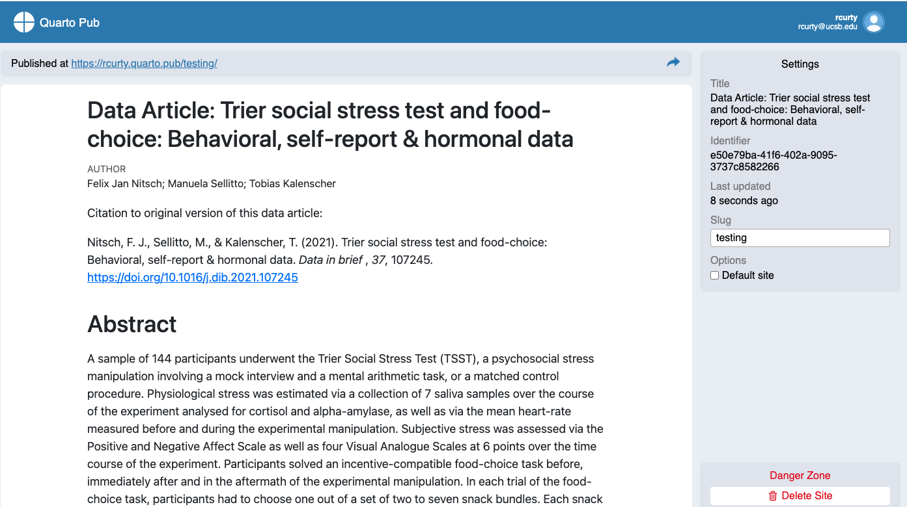
If there is time, we encourage you to try it yourself.
Publishing as website on GitHub
Another, better, but slightly more involved option for publishing a Quarto document on the web is to use GitHub and GitHub Pages. We have already seen how RStudio has built-in support for pushing your RStudio project to GitHub. To enable publishing to GitHub Pages, the website publication companion to GitHub, go to the Settings page of your repository on GitHub and select a branch (“branch” is a repository term) to publish. Name your main Quarto file index.qmd, and render it to HTML as index.html. With GitHub Pages enabled on your repository, the HTML file in your repository at https://github.com/myusername/myrepo/index.html will appear on the web as https://myusername.github.io/.
Other document types
When you create a new Quarto file in R Studio recall that you are presented with a choice of Output Formats:
For the purposes of this workshop we’ve been using HTML as the output format but other types are available. You can render your Quarto as a document, a presentation or a Shiny app. With the default installation of RStudio HTML output is most likely to work. Other formats may require additional R packages and/or code libraries be installed on your computer. RStudio also has a templating system to help with creating Quarto files with common elements, YAML metadata and rendering instructions. This can be very helpful for example if you want to create a weekly or monthly report documenting an ongoing experiment, study or other changing data.
If you are willing to publish your manuscript through a peer-reviewed journal
- Most journals now request the underlying data, code and documentation to be shared along with the manuscript, so in that case you will have that handy. Whenever possible, give preference to open-access journals with data sharing recommendations to foster open science, transparency and research reproducibility. The TOP Factor allows you to search by journal title and/or discipline and will rank journals compliance with those principles.
- If your chosen journal does not require nor recommend a particular process for making your project data available (some will dictate what, where and how project data should be uploaded), you may still consider depositing your project files in a reliable data repository and cross-reference paper and project data, ideally with a formal citation containing a Persistent Identifier(e.g., DOI, ARK, handle, Purl) to avoid link rot.
- In terms of data repositories, there are many options available, and they can be disciplinary, institutional or generalist (e.g., Zenodo, Figshare). For a compreheensive list of options available please refer to the Registry of Research Data Repositories. At UCSB Library we support Dryad. If Dryad is not suitable for your needs, Research Data Services can assist you finding a more optimal solution for archiving your project data.
Key Points
You may choose to share and publish your data project before publishing its associated manuscript.
Sharing the code, data and documentation is necessary to allow for inspection and research reproducibility.